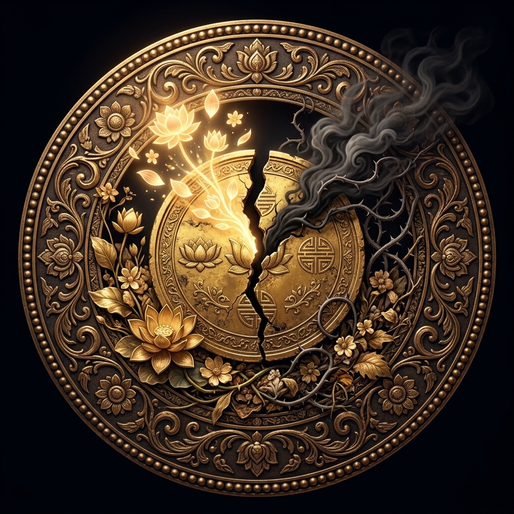
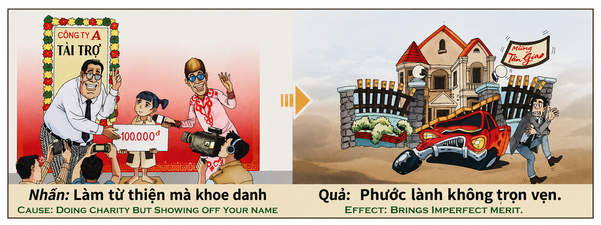

El Mérito FracturadoThe Fractured MeritIl Merito Fratturato破碎的功德الاستحقاق المكسورРасколотая ЗаслугаDas Gebrochene VerdienstLe Mérite Fracturéひび割れた功徳O Mérito FraturadoPhước Lành Không Trọn Vẹn
"El universo no es ciego: ve tanto la mano que da como la intención que la mueve. Cuando la caridad nace del amor genuino, el fruto kármico es un diamante perfecto. Pero cuando la generosidad se viste de espectáculo para alimentar el orgullo del donante, el fruto nace agrietado desde su corazón: la riqueza llega, pero envenenada; la mansión se levanta, pero sus cimientos están corroídos por la vanidad que los cimentó. El mérito imperfecto es la prueba más sutil de que el karma no mide el tamaño de la ofrenda, sino la pureza del silencio con que fue entregada.""The universe is not blind: it sees both the hand that gives and the intention that moves it. When charity is born of genuine love, the karmic fruit is a perfect diamond. But when generosity dresses itself as spectacle to feed the donor's pride, the fruit is born cracked from its very core: wealth arrives, but poisoned; the mansion rises, but its foundations are corroded by the vanity that cemented them. Imperfect merit is the most subtle proof that karma does not measure the size of the offering, but the purity of the silence with which it was given.""L'universo non è cieco: vede sia la mano che dà sia l'intenzione che la muove. Quando la carità nasce dall'amore genuino, il frutto karmico è un diamante perfetto. Ma quando la generosità si veste da spettacolo per nutrire l'orgoglio del donatore, il frutto nasce incrinato dal suo nucleo: la ricchezza arriva, ma avvelenata; la villa sorge, ma le sue fondamenta sono corrose dalla vanità che le ha cementate. Il merito imperfetto è la prova più sottile che il karma non misura la dimensione dell'offerta, ma la purezza del silenzio con cui è stata consegnata.""宇宙并非盲目：它既看到施予的手，也看到推动它的意图。当慈善源于真诚的爱，业力之果便是完美的钻石。但当慷慨披上了炫耀的外衣来喂养施予者的骄傲，果实从核心便已破裂：财富到来，却被毒化；豪宅拔地而起，但地基已被铸就它的虚荣所腐蚀。不完美的功德是最微妙的证明：业力衡量的不是供品的大小，而是交付时沉默的纯净。""الكون ليس أعمى: إنه يرى اليد التي تعطي والنية التي تحركها معاً. عندما تولد الصدقة من الحب الصادق، تكون الثمرة الكارمية ماسة كاملة. لكن عندما يتنكر الكرم في ثوب الاستعراض لإطعام كبرياء المانح، تولد الثمرة متشققة من جوهرها: الثروة تصل لكنها مسمومة، والقصر يرتفع لكن أساساته قد نخرها الغرور الذي بناها. الاستحقاق الناقص هو البرهان الأكثر دقة على أن الكارما لا تقيس حجم العطاء، بل نقاء الصمت الذي قُدم به."«Вселенная не слепа: она видит и руку дающую, и намерение, которое ею движет. Когда благотворительность рождается из подлинной любви, кармический плод — безупречный алмаз. Но когда щедрость облекается в зрелище, чтобы питать гордыню дарителя, плод рождается треснувшим изнутри: богатство приходит, но отравленное; особняк возвышается, но его фундамент разъеден тщеславием, которое его цементировало. Несовершенная заслуга — это самое тонкое доказательство того, что карма измеряет не размер подношения, а чистоту тишины, с которой оно было отдано.»„Das Universum ist nicht blind: Es sieht sowohl die gebende Hand als auch die Absicht, die sie bewegt. Wenn Wohltätigkeit aus aufrichtiger Liebe entsteht, ist die karmische Frucht ein makelloser Diamant. Doch wenn sich Großzügigkeit als Spektakel verkleidet, um den Stolz des Spenders zu nähren, wird die Frucht von ihrem Kern an gebrochen geboren: Reichtum kommt, aber vergiftet; die Villa erhebt sich, aber ihre Fundamente sind von der Eitelkeit zerfressen, die sie zementierte. Unvollkommenes Verdienst ist der subtilste Beweis dafür, dass Karma nicht die Größe der Gabe misst, sondern die Reinheit der Stille, mit der sie gegeben wurde.""L'univers n'est pas aveugle : il voit à la fois la main qui donne et l'intention qui la meut. Quand la charité naît de l'amour sincère, le fruit karmique est un diamant parfait. Mais quand la générosité se déguise en spectacle pour nourrir l'orgueil du donateur, le fruit naît fissuré depuis son cœur : la richesse arrive, mais empoisonnée ; le manoir s'élève, mais ses fondations sont rongées par la vanité qui les a cimentées. Le mérite imparfait est la preuve la plus subtile que le karma ne mesure pas la taille de l'offrande, mais la pureté du silence avec lequel elle fut donnée."「宇宙は盲目ではありません。与える手も、それを動かす意図も、両方を見ています。慈善が誠実な愛から生まれるとき、カルマの果実は完璧なダイヤモンドです。しかし寛大さが施主の虚栄を養うための見世物の衣を纏うとき、果実はその核心からひび割れた状態で生まれます：富は到来しますが、毒されています。邸宅は建ちますが、その基盤はそれを築いた虚栄心によって腐食されています。不完全な功徳は、カルマが供物の大きさではなく、それが捧げられた沈黙の純粋さを量るという最も精妙な証です。」"O universo não é cego: vê tanto a mão que dá como a intenção que a move. Quando a caridade nasce do amor genuíno, o fruto cármico é un diamante perfeito. Mas quando la generosidade se veste de espetáculo para alimentar o orgulho do doador, o fruto nasce rachado desde o seu âmago: a riqueza chega, mas envenenada; a mansão ergue-se, mas os seus alicerces estão corroídos pela vaidade que os cimentou. O mérito imperfeito é a prova mais subtil de que o karma não mede o tamanho da oferta, mas a pureza do silêncio com que foi entregue.""Vũ trụ không mù quáng: nó thấy cả bàn tay cho đi lẫn ý định đã thúc đẩy nó. Khi lòng từ thiện sinh ra từ tình yêu chân thành, quả nghiệp là viên kim cương hoàn hảo. Nhưng khi sự hào phóng khoác lên mình bộ áo phô trương để nuôi dưỡng lòng kiêu hãnh của người cho, quả sinh ra đã nứt từ tâm: của cải đến nhưng bị đầu độc; biệt thự mọc lên nhưng nền móng bị ăn mòn bởi sự phù phiếm đã đúc nên nó. Phước lành không trọn vẹn là bằng chứng tinh tế nhất rằng nghiệp quả không đo lường kích thước của lễ vật, mà đo sự thuần khiết của sự im lặng khi nó được trao đi."
El relieve antiguo del templo nos revela una de las verdades más sutiles, inteligentes y profundamente matizadas de toda la ley kármica: no basta con hacer el bien; es la intención invisible la que determina la calidad del fruto. En la imagen vemos a un hombre que dona una gran suma de dinero ante cámaras y periodistas, posando con ostentación y gafas de sol como una estrella de cine, mientras la niña que debería ser protagonista de la compasión queda relegada a un accesorio decorativo de su vanidad. El resultado kármico no es la miseria total —porque el acto de dar sí existió—, sino algo infinitamente más inquietante: el mérito fracturado, una riqueza que llega manchada, una mansión que se levanta pero cuyas paredes se agrietan, un coche lujoso que se estrella contra la propia verja. La abundancia llega, pero envenenada desde su raíz.
La primera dimensión de esta ley es el principio de la dualidad intencional: toda acción kármica es un compuesto químico de gesto e intención. Imaginemos la caridad como una moneda de dos caras. Una cara es el acto visible: la mano que entrega, el dinero que fluye, el huérfano que come. Esta cara siempre genera mérito positivo, porque el universo honra el bien material que se produce independientemente del porqué. Pero la otra cara de la moneda es la intención oculta: ¿por qué di? ¿Di para aliviar el sufrimiento del otro, o di para que todos vieran mi nombre grabado en la placa? ¿Di porque mi corazón desbordaba de compasión, o di porque quería que los periodistas fotografiaran mi sonrisa? Cuando ambas caras de la moneda son puras —generosidad genuina y acto visible—, el fruto kármico es un diamante sin impureza. Pero cuando una cara es luz y la otra es sombra, el fruto nace partido: mitad bendición, mitad maldición. Es lo que el budismo llama punya kṣaya (mérito corruptible) y lo que Jesús describió con precisión quirúrgica: «Cuando hagas limosna, que no sepa tu mano izquierda lo que hace tu derecha» (Mateo 6:3).
La segunda dimensión es la contaminación sutil del fruto: el veneno del ego no destruye el karma, lo deforma. Esta es la sutileza más extraordinaria de este pasaje. El karma no es un sistema binario de todo-o-nada. No funciona como un juez que dice «culpable» o «inocente». Funciona como un alquimista que mezcla los ingredientes exactos que el alma depositó. Si depositas oro puro (compasión genuina), obtienes oro puro. Si depositas una aleación de oro y plomo (compasión mezclada con vanidad), obtienes exactamente eso: una aleación. La mansión del hombre vanidoso sí se construye —porque el oro de su acción era real—, pero sus cimientos están envenenados por el plomo de su ego —porque la vanidad también era real—. Por eso, en la imagen original, vemos riqueza material rodeada de caos: un coche destrozado, una valla rota, un hombre angustiado en medio de su propia opulencia. La riqueza llegó, pero no trae paz; la abundancia floreció, pero está podrida en su interior. Es la fortuna del que gana la lotería y pierde a toda su familia en el proceso. Es el empresario que acumula millones pero vive en una ansiedad perpetua que no puede calmar con ningún médico. El universo le dio exactamente lo que pidió: riqueza visible para ser vista — pero le robó la paz invisible que solo nace de la pureza.
La tercera dimensión es la más profunda y universal: la purificación del mérito es posible, y el camino es el anonimato sagrado. Todas las tradiciones espirituales coinciden en un punto: la caridad suprema es la que nadie ve. En el judaísmo, la tzedaká más elevada (nivel 8 de Maimónides) es aquella en que ni el donante ni el receptor se conocen. En el islam, el Profeta dijo: «La mejor caridad es la que la mano izquierda no sabe que la derecha ha dado». En el budismo, el dāna pāramitā (perfección de la generosidad) exige que el acto de dar esté libre de tres impurezas: la noción del yo como donante, la noción del otro como receptor, y la noción del objeto como propiedad. En el hinduismo, el Bhagavad Gita distingue entre el don sáttvico (dado sin esperar nada, en el lugar y momento adecuados) y el don rajásico (dado con expectativa de retorno o reconocimiento público). La enseñanza es unánime: el mérito perfecto no tiene nombre, no tiene rostro, no tiene cámara. Es puro silencio convertido en acción.
The ancient temple relief reveals to us one of the most subtle, intelligent, and profoundly nuanced truths of the entire law of karma: it is not enough to do good; it is the invisible intention that determines the quality of the fruit. In the image, we see a man donating a large sum of money before cameras and journalists, posing ostentatiously with sunglasses like a movie star, while the girl who should be the protagonist of compassion is relegated to a decorative accessory of his vanity. The karmic result is not total misery—because the act of giving did exist—but something infinitely more unsettling: fractured merit, a wealth that arrives stained, a mansion that rises but whose walls crack, a luxury car that crashes into its own gate. Abundance arrives, but poisoned from its root.
The first dimension of this law is the principle of intentional duality: every karmic action is a chemical compound of gesture and intention. Imagine charity as a two-sided coin. One side is the visible act: the hand that gives, the money that flows, the orphan who eats. This side always generates positive merit, because the universe honors the material good produced regardless of the why. But the other side of the coin is the hidden intention: Why did I give? Did I give to relieve the other's suffering, or so that everyone could see my name engraved on the plaque? Did I give because my heart overflowed with compassion, or because I wanted journalists to photograph my smile? When both sides of the coin are pure—genuine generosity and visible act—the karmic fruit is a flawless diamond. But when one side is light and the other is shadow, the fruit is born split: half blessing, half curse. This is what Buddhism calls punya kṣaya (corruptible merit) and what Jesus described with surgical precision: 'When you give to the needy, do not let your left hand know what your right hand is doing' (Matthew 6:3).
The second dimension is the subtle contamination of the fruit: the ego's poison does not destroy karma, it deforms it. This is the most extraordinary subtlety of this passage. Karma is not a binary all-or-nothing system. It does not function like a judge who says 'guilty' or 'innocent.' It functions like an alchemist who mixes the exact ingredients the soul deposited. If you deposit pure gold (genuine compassion), you receive pure gold. If you deposit an alloy of gold and lead (compassion mixed with vanity), you receive exactly that: an alloy. The vain man's mansion does get built—because the gold of his action was real—but its foundations are poisoned by the lead of his ego—because the vanity was also real. That is why, in the original image, we see material wealth surrounded by chaos: a wrecked car, a broken fence, a man in anguish amid his own opulence. Wealth arrived, but it brings no peace; abundance blossomed, but it is rotten at its core.
The third dimension is the deepest and most universal: the purification of merit is possible, and the path is sacred anonymity. All spiritual traditions agree on one point: the supreme charity is the one no one sees. In Judaism, the highest tzedakah (Maimonides' level 8) is one in which neither donor nor recipient knows each other. In Islam, the Prophet said: 'The best charity is that which the left hand does not know the right has given.' In Buddhism, dāna pāramitā (perfection of generosity) requires that the act of giving be free from three impurities: the notion of the self as donor, the notion of the other as recipient, and the notion of the object as property. The teaching is unanimous: perfect merit has no name, no face, no camera. It is pure silence transformed into action.
Il rilievo dell'antico tempio ci rivela una delle verità più sottili, intelligenti e profondamente sfumate dell'intera legge del karma: non basta fare el bene; è l'intenzione invisibile a determinare la qualità del frutto. Nell'immagine vediamo un uomo que dona una grande somma di denaro davanti a telecamere e giornalisti, posando con ostentazione e occhiali da sole come una star del cinema, mentre la bambina che dovrebbe essere la protagonista della compassione è relegata ad accessorio decorativo della sua vanità. Il risultato karmico non è la miseria totale — perché l'atto del dare è esistito —, ma qualcosa di infinitamente più inquietante: il merito fratturato, una ricchezza que arriva macchiata, una villa que sorge ma le cui pareti si crepano, un'auto di lusso che si schianta contro il proprio cancello. La abbondanza llega, mas envenenada desde a sua raiz.
La prima dimensione di questa legge è il principio della dualità intenzionale: ogni azione karmica è un composto chimico di gesto e intenzione. Immaginiamo la carità come una moneta a due facce. Una faccia è l'atto visibile: la mano que dà, il denaro que fluisce, l'orfano que mangia. Questa faccia genera sempre merito positivo, perché l'universo onora le bene materiale que si produce indipendentemente dal perché. Pero l'altra faccia della moneta è l'intenzione nascosta: perché ho dato? Ho dato per alleviare la sofferenza dell'altro, o perché tutti vedessero il mio nome inciso sulla targa? Ho dato perché il mio cuore traboccava di compassione, o perché volevo que i giornalisti fotografassero il mio sorriso? Quando entrambe le facce della moneta sono pure — generosità genuina e atto visibile —, il frutto karmico è un diamante senza impurità. Ma quando una faccia è luce e l'altra è ombra, il frutto nasce spaccato: metà benedizione, metà maledizione. È ciò que il buddismo chiama punya kṣaya (merito corrompibile) e ciò que Gesù descrisse con precisione chirurgica: «Quando fai l'elemosina, non sappia la tua sinistra ciò che fa la tua destra» (Matteo 6:3).
La seconda dimensione è la contaminazione sottile del frutto: il veleno dell'ego non distrugge il karma, lo deforma. Questa è la sottigliezza più straordinaria di questo passaggio. Il karma não è un sistema binario del tutto-o-niente. Non funziona come un giudice que dice «colpevole» o «innocente». Funziona come un alchimista que miscela gli ingredienti esatti que l'anima ha depositato. Se depositi oro puro (compassione genuina), ottieni oro puro. Se depositi una lega di oro e piombo (compassione mescolata con vanità), ottieni esattamente questo: una lega. La villa dell'uomo vanitoso sì viene costruita — perché l'oro della sua azione era reale —, ma le sue fondamenta sono avvelenate dal piombo del suo ego — perché la vanità era altrettanto reale —. Per questo, nell'immagine originale, vediamo la ricchezza materiale circondata dal caos: un'auto distrutta, una recinzione rotta, un uomo angosciato in mezzo alla sua stessa opulenza. La ricchezza è arrivata, ma non porta pace; l'abbondanza è fiorita, ma è marcia al suo interno. È la sfortuna di chi vince la lotteria e perde tutta la sua famiglia nel processo. È l'imprenditore che accumula milioni ma vive in un'ansia perpetua che nessun medico può calmare. L'universo gli ha dato esattamente ciò che ha chiesto: ricchezza visibile per essere vista — ma gli ha rubato la pace invisibile che nasce solo dalla purezza.
La terza dimensione è la più profonda e universale: la purificazione del merito è possibile, e il cammino è l'anonimato sacro. Tutte le tradizioni spirituali concordano su un punto: la carità suprema è quella che nessuno vede. Nel giudaismo, la tzedaká più elevata (livello 8 di Maimonide) è quella in cui né il donatore né il beneficiario si conoscono. Nell'islam, il Profeta disse: «La migliore carità è quella che la mano sinistra non sa che la destra ha dato». Nel buddismo, il dāna pāramitā (perfezione della generosità) richiede che l'atto del donare sia libero da tre impurità: la nozione dell'io como donatore, la nozione dell'altro come ricevente, e la nozione dell'oggetto come proprietà. Nell'induismo, la Bhagavad Gita distingue tra il dono sattvico (dato senza aspettarsi nulla, nel luogo e nel momento opportuni) e il dono rajasico (dato con l'aspettativa di un retorno o di un riconoscimento pubblico). L'insegnamento è unanime: il merito perfetto non ha nome, non ha volto, non ha telecamera. È puro silenzio trasformato in azione.
古布施波罗蜜向我们揭示了整个业力法则中最微妙、最智慧、最深刻细腻的真理之一：仅仅行善是不够的；决定果实品质的是那看不见的意图。在图像中，我们看到一个人在摄像机和记者面前捐赠巨款，戴着墨镜像电影明星一样炫耀性地摆姿势，而本应成为慈悲主角的小女孩却沦为他虚荣心的装饰品。业力的结果不是彻底的贫困——因为施予的行为确实存在——而是无限更令人不安的东西：破碎的功德，一种被玷污的财富，一座拔地而起却墙壁开裂的豪宅，一辆撞上自家围栏的豪车。丰裕降临了，但从根源就被毒化了。
这条法则的第一个维度是意图二元性原则：每一个业力行为都是姿态与意图的化学化合物。想象慈善如同一枚双面硬币。一面是可见的行为：施予的手、流动的金钱、得到食物的孤儿。这一面总是产生正面功德，因为宇宙尊重所产生的物质利益，而不管其原因如何。但硬币的另一面是隐藏的意图：我为什么给予？是为了减轻他人的痛苦，还是为了让所有人看到我刻在牌匾上的名字？我是因为心中充满慈悲而给予，还是因为我想让记者拍下我的笑容？当硬币的两面都是纯净的——真诚的慷慨与可见的行为——业力之果就是无瑕的钻石。但当一面是光而另一面是影，果实便从诞生时就是分裂的：一半祝福，一半走运。这就是佛教所说的有漏功德（punya kṣaya），也是耶稣以外科手术般精确描述的：“你施舍的时候，不要叫左手知道右手所做的”（马太福音6:3）。
第二个维度是果实的微妙污染：自我的毒素不会摧毁业力，而是扭曲它。这是这一章最精妙、最非凡的细节。业力不是一个“全或无”的二元系统。它不像法官宣判“有罪”或“无罪”那样工作。它像一位炼金术士，精确地混合灵魂所存入的成分。如果你存入纯金（真诚的慈悲），你得到纯金。如果你存入金铅合金（慈悲掺杂虚荣），你得到的正是如此：一种合金。虚荣者的豪宅确实建成了——因为他行为中的金子是真实的——但它的地基被他自我的铅所毒化——因为虚荣也是真实的。因此，在原始图像中，我们看到物质财富被混乱包围：一辆撞毁的跑车、一扇破损的围栏、一个在自己奢华中痛苦万分的男人。财富到来了，但并未带来和平；繁荣盛开，但内部已经腐烂。这就像一个人赢了彩票，却在过程中失去了所有家人。这就像一个企业家积累了数百万财产，却生活在任何医生都无法治愈的永久焦虑中。宇宙准确地给了他所要求的东西：为了被看见而展现的可见财富——但它夺走了他那只有从纯洁中才能诞生的不可见的内心宁静。
第三个维度是最深刻和最普遍的：功德的净化是可能的，而路径是神圣的匿名。所有的灵性传统都认同一点：至高的慈善是无人看见的慈善。在犹太教中，最高等级的义举（迈蒙尼德的第八级）是施者与受者互不相识。在伊斯兰教中，先知说：“最好的施舍是左手不知道右手所给的。”在佛教中，布施波罗蜜要求施予的行为摆脱三种不净：施者之我执、受者之执着以及所施物品之所有执。在印度教中，《薄伽梵歌》区分了萨特瓦（纯质）布施（不求回报、在适当的时间和地点给予）和拉贾斯（激质）布施（怀着回报的期望或为了公开认可而给予）。教导是完全一致的：完美的功德没有名字，没有面孔，没有摄像机。它是转化为行动的纯粹沉默。
يكشف لنا نقش المعبد القديم واحدة من أكثر الحقائق دقة وذكاءً وعمقاً في قانون الكارما بأكمله: لا يكفي فعل الخير؛ إن النية غير المرئية هي التي تحدد جودة الثمرة. في الصورة نرى رجلاً يتبرع بمبلغ كبير أمام الكاميرات والصحفيين، يتباهى بنظاراته الشمسية كنجم سينمائي، بينما الطفلة التي ينبغي أن تكون بطلة الرحمة أُنزلت إلى مجرد إكسسوار لغروره. النتيجة الكارمية ليست البؤس التام — لأن فعل العطاء قد وُجد — بل شيء أكثر إزعاجاً بلا حدود: الاستحقاق المكسور، ثروة تصل ملوثة، قصر يرتفع لكن جدرانه تتشقق، سيارة فاخرة تصطدم ببوابتها الخاصة. إن الوفرة تصل، ولكنها مسمومة من جذورها.
البعد الأول لهذا القانون هو مبدأ ثنائية النية: كل فعل كارمي هو مركب كيميائي من الإيماءة والنية. تخيل الصدقة كعملة ذات وجهين. وجه هو الفعل المرئي: اليد التي تعطي، المال الذي يتدفق، اليتيم الذي يأكل. هذا الوجه يولد دائماً استحقاقاً إيجابياً، لأن الكون يكرم الخير المادي الذي ينتج بغض النظر عن السبب. لكن الوجه الآخر للعملة هو النية المخفية: لماذا أعطيت؟ هل أعطيت لتخفيف معاناة الآخر أم ليرى الجميع اسمي محفوراً على اللوحة؟ هل أعطيت لأن قلبي كان يفيض بالرحمة أم لأنني أردت أن يلتقط الصحفيون ابتسامتي؟ عندما يكون كلا الوجهين نقياً — كرم حقيقي وفعل مرئي — تكون الثمرة الكارمية ماسة بلا عيب. لكن عندما يكون وجه نوراً والآخر ظلاً، تولد الثمرة مشقوقة: نصف بركة ونصف لعنة. هذا ما يسميه البوذية بونيا كشايا (الاستحقاق الفاسد) وما وصفه يسوع بدقة جراحية: «أما أنت فمتى صنعت صدقة فلا تعرف شمالك ما تفعل يمينك» (متى 6:3).
البعد الثاني هو التلوث الخفي للثمرة: سم الأنا لا يدمر الكارما، بل يشوهها. هذه هي السخرية الأكثر استثنائية في هذا الممر. الكارما ليست نظاماً ثنائياً من الكل أو اللاشيء. إنها لا تعمل كقاضٍ يقول «مذنب» أو «بريء». بل تعمل كخيميائي يمزج المكونات الدقيقة التي أودعتها الروح. إذا أودعت ذهباً خالصاً (رحمة صادقة)، تتلقى ذهباً خالصاً. إذا أودعت سبيكة من ذهب ورصاص (رحمة ممزوجة بالغرور)، تتلقى ذلك بالضبط: سبيكة. إن قصر الرجل الأناني يُبنى بالفعل — لأن ذهب عمله كان حقيقياً — ولكن أساساته مسمومة برصاص أناه — لأن الغرور كان حقيقياً أيضاً —. لهذا السبب، نرى في الصورة الأصلية ثروة مادية محاطة بالفوضى: سيارة محطمة، وسياج مكسور، ورجل يعيش في كرب وسط ترفه الخاص. لقد وصلت الثروة، لكنها لا تجلب السلام؛ وازدهر الرخاء، لكنه متعفن من الداخل. إنه نصيب من يربح اليانصيب ويفقد عائلته بأكملها في هذه العملية. إنه رجل الأعمال الذي يجمع الملايين ولكنه يعيش في قلق دائم لا يستطيع أي طبيب تهدئته. لقد أعطاه الكون بالضبط ما طلب: ثروة مرئية لتُرى — لكنه سرق منه السلام غير المرئي الذي لا يولد إلا من النقاء.
البعد الثالث هو الأعمق والأكثر شمولية: تنقية الاستحقاق ممكنة، والطريق هو العطاء المجهول المقدس. تتفق جميع التقاليد الروحية على نقطة واحدة: الصدقة العليا هي التي لا يراها أحد. في اليهودية، أعلى درجات الصدقة (المرتبة الثامنة عند ابن ميمون) هي تلك التي لا يعرف فيها المانح ولا الآخذ بعضهما البعض. وفي الإسلام، قال النبي: «أفضل الصدقة ما أخفته اليمين عن الشمال». وفي البوذية، يتطلب دانا باراميتا (كمال الجود) أن يكون فعل العطاء خالياً من ثلاث شوائب: فكرة الذات كمانح، وفكرة الآخر كآخذ، وفكرة الشيء كممتلك. وفي الهندوسية، يميز البهاغافاد غيتا بين العطاء الساتفي (الذي يُعطى دون توقع أي شيء، في المكان والزمان المناسبين) والعطاء الراجاسي (الذي يُعطى مع توقع المقابل أو الاعتراف العام). التعليم بالإجماع: الاستحقاق الكامل ليس له اسم، وليس له وجه، وليس له كاميرا. إنه صمت نقي تحول إلى فعل.
Барельеф древнего храма открывает нам одну из самых тонких, умных и глубоко нюансированных истин всего закона кармы: недостаточно делать добро — именно невидимое намерение определяет качество плода. На изображении мы видим мужчину, жертвующего крупную сумму перед камерами и журналистами, позирующего с тёмными очками как кинозвезда, в то время как девочка, которая должна быть героиней сострадания, низведена до декоративного аксессуара его тщеславия. Кармический результат — не полная нищета, ведь акт даяния существовал, — а нечто бесконечно более тревожное: расколотая заслуга, богатство, приходящее запятнанным, особняк, который возвышается, но чьи стены трескаются, роскошный автомобиль, врезающийся в собственные ворота. Изобилие приходит, но отравленное со своего корня.
Первое измерение этого закона — принцип намеренческой двойственности: каждое кармическое действие — это химическое соединение жеста и намерения. Представим благотворительность как монету с двумя сторонами. Одна сторона — видимое действие: рука, которая даёт, деньги, которые текут, сирота, который ест. Эта сторона всегда порождает положительную заслугу, так как вселенная чтит материальное благо, которое создается независимо от причин. Но другая сторона монеты — скрытое намерение: зачем я дал? Чтобы облегчить чужое страдание или чтобы все увидели моё имя на табличке? Дал ли я потому, что моё сердце переполнялось состраданием, или потому, что хотел, чтобы журналисты сфотографировали мою улыбку? Когда обе стороны монеты чисты — подлинная щедрость и видимое действие —, кармический плод — безупречный алмаз. Но когда одна сторона — свет, а другая — тень, плод рождается расколотым: половина — благословение, половина — проклятие. Это то, что буддизм называет пунья кшая (искаженная заслуга), и то, что Иисус описал с хирургической точностью: «У тебя же, когда творишь милостыню, пусть левая рука твоя не знает, что делает правая» (Матфея 6:3).
Второе измерение — тонкое заражение плода: яд эго не уничтожает карму, а деформирует её. Это самая необычайная тонкость данного отрывка. Карма — не бинарная система «всё или ничего». Она не работает как судья, говорящий «виновен» или «невиновен». Она действует как алхимик, смешивающий именно те ингредиенты, которые вложила душа. Если вы вложили чистое золото (искреннее сострадание), вы получаете чистое золото. Если вы вложили сплав золота и свинца (сострадание, смешанное с тщеславием), вы получаете именно это: сплав. Особняк тщеславного человека действительно строится — ведь золото его поступка было настоящим —, но его фундамент отравлен свинцом его эго — ведь тщеславие тоже было настоящим. Вот почему на оригинальном изображении мы видим материальное богатство, окруженное хаосом: разбитый автомобиль, сломанный забор, отчаявшийся человек посреди своего великолепия. Богатство пришло, но оно не приносит мира; изобилие расцвело, но оно гнилое внутри. Это судьба того, кто выигрывает в лотерею и теряет при этом всю свою семью. Это предприниматель, который накапливает миллионы, но живет в постоянной тревоге, которую не может вылечить ни один врач. Вселенная дала ему именно то, что он просил: видимое богатство, чтобы его видели — но она украла у него невидимый покой, который рождается только из чистоты.
Третье измерение — самое глубокое и универсальное: очищение заслуги возможно, и путь — священная анонимность. Все духовные традиции сходятся в одном: высшая благотворительность — та, которую никто не видит. В иудаизме высшая цедака (8-й уровень Маймонида) — это та, при которой ни даритель, ни получатель не знают друг друга. В исламе Пророк сказал: «Лучшая милостыня — та, при которой левая рука не знает, что дает правая». В буддизме дана-парамита (совершенство щедрости) требует, чтобы акт даяния был свободен от трех загрязнений: представления о «я» как дарителе, о «другом» как получателе и об объекте как собственности. В индуизме Бхагавадгита различает дар саттвический (приносимый без ожидания награды, в надлежащем месте и в надлежащее время) и дар раджасический (приносимый в ожидании отдачи или общественного признания). Учение единогласно: совершенная заслуга не имеет имени, лица и камер. Это чистая тишина, превращенная в действие.
Das antike Tempelrelief offenbart uns eine der subtilsten, intelligentesten und am tiefsten nuancierten Wahrheiten des gesamten karmischen Gesetzes: Es reicht nicht aus, Gutes zu tun; es ist die unsichtbare Absicht, die die Qualität der Frucht bestimmt. Im Bild sehen wir einen Mann, der vor Kameras und Journalisten eine große Summe spendet, mit Sonnenbrille wie ein Filmstar posiert, während das Mädchen, das eigentlich die Heldin des Mitgefühls sein sollte, zum dekorativen Zubehör seiner Eitelkeit degradiert wird. Das karmische Ergebnis ist nicht totales Elend — denn der Akt des Gebens existierte ja —, sondern etwas unendlich Beunruhigenderes: gebrochenes Verdienst, ein Reichtum, der befleckt ankommt, eine Villa, die sich erhebt, aber deren Wände Risse bekommen, ein Luxusauto, das gegen das eigene Tor prallt. Der Überfluss kommt, aber von der Wurzel an vergiftet.
Die erste Dimension dieses Gesetzes ist das Prinzip der Absichtsdualität: Jede karmische Handlung ist eine chemische Verbindung aus Geste und Absicht. Stellen wir uns die Wohltätigkeit als zweiseitige Münze vor. Eine Seite ist die sichtbare Handlung: die gebende Hand, das fließende Geld, das essende Waisenkind. Diese Seite erzeugt immer positives Verdienst, weil das Universum das materielle Gute honoriert, das unabhängig vom Warum erzeugt wird. Aber die andere Seite der Münze ist die verborgene Absicht: Warum habe ich gegeben? Habe ich gegeben, um das Leiden des anderen zu lindern, oder damit alle meinen Namen auf der Plakette sehen? Habe ich gegeben, weil mein Herz vor Mitgefühl überfloss, oder weil ich wollte, dass die Journalisten mein Lächeln fotografieren? Wenn beide Seiten der Münze rein sind — echte Großzügigkeit und sichtbare Tat —, ist die karmische Frucht ein makelloser Diamant. Wenn eine Seite Licht und die andere Schatten ist, wird die Frucht gespalten geboren: halb Segen, halb Fluch. Es ist das, was der Buddhismus punya kṣaya (verderbliches Verdienst) nennt und was Jesus mit chirurgischer Präzision beschrieb: «Wenn du aber Almosen gibst, so lass deine linke Hand nicht wissen, was deine rechte tut» (Matthäus 6:3).
Die zweite Dimension ist die subtile Kontamination der Frucht: das Gift des Egos zerstört das Karma nicht, es verformt es. Dies ist die außergewöhnlichste Subtilität dieser Passage. Karma ist kein binäres Alles-oder-Nichts-System. Es funktioniert nicht wie ein Richter, der „schuldig“ oder „unschuldig“ sagt. Es funktioniert wie ein Alchemist, der die exakten Zutaten mischt, die die Seele hinterlegt hat. Wenn du reines Gold einzahlst (echtes Mitgefühl), erhältst du reines Gold. Wenn du eine Legierung aus Gold und Blei einzahlst (Mitgefühl gemischt mit Eitelkeit), erhältst du genau das: eine Legierung. Die Villa des eitlen Mannes wird zwar tatsächlich gebaut — weil das Gold seiner Handlung echt war —, aber ihre Fundamente sind durch das Blei seines Egos vergiftet — weil die Eitelkeit ebenfalls echt war —. Deshalb sehen wir auf dem Originalbild materiellen Reichtum inmitten von Chaos: ein zerstörtes Auto, einen zerbrochenen Zaun, einen verzweifelten Mann inmitten seines eigenen Prunks. Der Reichtum kam, bringt aber keinen Frieden; der Überfluss blühte auf, ist aber im Inneren verrottet. Es ist das Schicksal desjenigen, der im Lotto gewinnt und dabei seine gesamte Familie verliert. Es ist der Unternehmer, der Millionen anhäuft, aber in einer ständigen Angst lebt, die kein Arzt lindern kann. Das Universum gab ihm genau das, worum er gebeten hatte: sichtbaren Reichtum, um gesehen zu werden — aber es raubte ihm den unsichtbaren Frieden, der nur aus Reinheit entsteht.
Die dritte Dimension ist die tiefste und universellste: Die Reinigung des Verdienstes ist möglich, und der Weg ist die heilige Anonymität. Alle spirituellen Traditionen stimmen in einem Punkt überein: Die höchste Wohltätigkeit ist die, die niemand sieht. Im Judentum ist die höchste Tzedaka (Stufe 8 von Maimonides) jene, bei der sich weder der Spender noch der Empfänger kennen. Im Islam sagte der Prophet: „Die beste Spende ist die, bei der die linke Hand nicht weiß, was die rechte gegeben hat.“ Im Buddhismus erfordert dāna pāramitā (Vollkommenheit der Großzügigkeit), dass der Akt des Gebens frei von drei Unreinheiten ist: der Vorstellung des Ichs als Spender, der Vorstellung des Anderen als Empfänger und der Vorstellung des Objekts als Eigentum. Im Hinduismus unterscheidet die Bhagavad Gita zwischen der sattvischen Gabe (ohne Erwartung von Gegenleistung am richtigen Ort und zur richtigen Zeit gegeben) und der rajasischen Gabe (gegeben in der Erwartung von Gegenleistung oder öffentlicher Anerkennung). Die Lehre ist einhellig: Das vollkommene Verdienst hat keinen Namen, kein Gesicht, keine Kamera. Es ist reine Stille, verwandelt in Handlung.
Le relief du temple ancien nous révèle l'une des vérités les plus subtiles, intelligentes et profondément nuancées de toute la loi du karma : il ne suffit pas de faire le bien ; c'est l'intention invisible qui détermine la qualité du fruit. Dans l'image, nous voyons un homme qui fait un don important devant les caméras et les journalistes, posant avec ostentation et lunettes de soleil comme une star de cinéma, tandis que la fillette qui devrait être la protagoniste de la compassion est reléguée au rang d'accessoire décoratif de sa vanité. Le résultat karmique n'est pas la misère totale — car l'acte de donner a bien existé —, mais quelque chose d'infiniment plus troublant : le mérite fracturé, une richesse qui arrive tachée, un manoir qui s'élève mais dont les murs se fissurent, une voiture de luxe qui s'écrase contre sa propre grille. L'abondance arrive, mais empoisonnée depuis sa racine.
La première dimension de cette loi est le principe de la dualité intentionnelle : toute action karmique est un composé chimique de geste et d'intention. Imaginons la charité comme une pièce à deux faces. Une face est l'acte visible : la main qui donne, l'argent qui coule, l'orphelin qui mange. Cette face génère toujours du mérite positif, car l'univers honore le bien matériel produit indépendamment du pourquoi. Mais l'autre face de la pièce est l'intention cachée : pourquoi ai-je donné ? Ai-je donné pour soulager la souffrance de l'autre ou pour que tous voient mon nom sur la plaque ? Ai-je donné parce que mon cœur débordait de compassion ou parce que je voulais que les journalistes photographient mon sourire ? Quand les deux faces de la pièce sont pures — générosité sincère et acte visible —, le fruit karmique est un diamant sans défaut. Mais quand une face est lumière et l'autre ombre, le fruit naît fendu : moitié bénédiction, moitié malédiction. C'est ce que le bouddhisme appelle punya kṣaya (mérite corruptible) et ce que Jésus a décrit avec une précision chirurgicale : « Mais quand tu fais l'aumône, que ta main gauche ne sache pas ce que fait ta main droite » (Matthieu 6:3).
La deuxième dimension est la contamination subtile du fruit : le poison de l'ego ne détruit pas le karma, il le déforme. C'est la subtilité la plus extraordinaire de ce passage. Le karma n'est pas un système binaire de tout ou rien. Il ne fonctionne pas comme un juge qui dirait « coupable » ou « innocent ». Il fonctionne comme un alchimiste qui mélange les ingrédients exacts que l'âme a déposés. Si vous déposez de l'or pur (compassion sincère), vous obtenez de l'or pur. Si vous déposez un alliage d'or et de plomb (compassion mêlée de vanité), vous recevez exactement cela : un alliage. Le manoir de l'homme vaniteux oui se construit — parce que l'or de son action était réel —, mais ses fondations sont empoisonnées par le plomb de son ego — parce que la vanité était également réelle —. C'est pourquoi, dans l'image originale, nous voyons la richesse matérielle entourée de chaos : une voiture détruite, une clôture brisée, un homme angoissé au milieu de sa propre opulence. La richesse est arrivée, mais elle n'apporte pas la paix ; l'abondance a fleuri, mais elle est pourrie de l'intérieur. C'est la fortune de celui qui gagne à la loterie et perd toute sa famille dans le processus. C'est l'entrepreneur qui accumule des millions mais vit dans une anxiété perpétuelle qu'aucun médecin ne peut calmer. L'univers lui a donné exactement ce qu'il a demandé : une richesse visible pour être vue — mais lui a dérobé la paix invisible qui ne naît que de la pureté.
La troisième dimension est la plus profonde et la plus universelle : la purification du mérite est possible, et le chemin est l'anonymat sacré. Toutes les traditions spirituelles s'accordent sur un point : la charité suprême est celle que personne ne voit. Dans le judaïsme, la tzedakah la plus élevée (niveau 8 de Maïmonide) est celle où ni le donateur ni le bénéficiaire ne se connaissent. Dans l'islam, le Prophète a dit : « La meilleure charité est celle que la main gauche ne sait pas que la droite a donnée ». Dans le bouddhisme, la dāna pāramitā (perfection de la générosité) exige que l'acte de donner soit libre de trois impuretés : la notion de soi comme donateur, la notion de l'autre comme bénéficiaire, et la notion de l'objet comme propriété. Dans l'hindouisme, la Bhagavad Gita distingue le don sattvique (donné sans rien attendre, au bon endroit et au bon moment) du don rajasique (donné avec l'attente d'un retour ou d'une reconnaissance publique). L'enseignement est unanime : le mérite parfait n'a pas de nom, pas de visage, pas de caméra. C'est du pur silence transformé en action.
古代寺院の浮彫りは、カルマの法則全体の中で最も精妙で、知的で、深く微妙なニュアンスに富んだ真理の一つを私達に明かしています：善を行うだけでは十分ではない。果実의 質を決定するのは目に見えない意図なのです。画像では、男がカメラとジャーナリストの前で多額の寄付をし、サングラスをかけて映画スターのように見せびらかすようにポーズをとっている一方、慈悲の主役であるべき少女は彼の虚栄心の装飾品に貶められています。カルマの結果は完全な貧困ではありません——なぜなら施しという行為は確かに存在したからです——しかし、無限にもっと不安なものです：ひび割れた功徳、汚れて到着する富、建つけれども壁にひびが入る邸宅、自らの門に衝突する高級車。豊かさは到来しますが、その根底から毒されています。
この法則の第一の次元は意図の二元性の原理：あらゆるカルマ的行為は、行動と意図の化学化合物であるということです。慈善を二面のコインと想像してください。一面は目に見える行為：与える手、流れるお金、食事する孤児。この面は常に正の功徳を生み出します。なぜなら宇宙は、動機がどうであれ、もたらされた物質的な善意を称えるからです。しかしコインのもう一面は隠された意図です：なぜ私は与えたのか？相手の苦しみを和らげるためか、それとも全員が銘板に私の名前を見るためか？私の心が慈悲で溢れていたから与えたのか、それともジャーナリストに私の笑顔を撮ってほしかったからか？コインの両面が純粋であるとき（真の寛大さと目に見える行為）、カルマの果実は無瑕のダイヤモンドです。しかし一面が光で他面が影であるとき、果実は割れた状態で生まれます：半分は祝福、半分は呪い。これは仏教で有漏功德（punya kṣaya）と呼ばれるものであり、イエスが外科的精度で述べたことです：「施しをするときは、右の手のすることを左の手に知らせてはなりません」（マタイ6:3）。
第二の次元は、果実の微妙な汚染：エゴの毒はカルマを破壊せず、変形させるということです。これは、この一節における最も並外れた精妙さです。カルマは「全か無か」の二元的なシステムではありません。それは「有罪」か「無罪」かを告げる裁判官のようには機能しません。それは魂が預けた正確な成分を混合する錬金術師のように機能します。純金（真の慈悲）を預ければ、純金を得ます。金と鉛の合金（虚栄心と混じった慈悲）を預ければ、まさにそれを受け取ります。すなわち合金です。虚栄心の強い男の邸宅は確かに建てられます。なぜなら、彼の行動の金は本物だったからです。しかし、その土台は彼のエゴの鉛によって毒されています。なぜなら、虚栄心もまた本物だったからです。だからこそ、オリジナルの画像では、混乱に囲まれた物質的富が見られます。大破した車、壊れたフェンス、自らの豪華さの中で苦悩する男。富は到来しましたが、平和をもたらしません。豊かさは花開きましたが、その内部は腐っています。それは、宝くじに当たってその過程で家族全員を失う者の運命です。何百万も蓄えながら、どの医者も静めることのできない永続的な不安の中に生きる起業家です。宇宙は彼が求めたものを正確に与えました。すなわち、見られるための目に見える富です。しかし、純粋さからしか生まれない目に見えない平和を、宇宙は彼から奪い去ったのです。
第三の次元は最も深く普遍的です：功徳の浄化は可能であり、その道は神死な匿名性です。すべての精神的伝統は一点で一致しています。最高の慈善は誰にも見えないものです。ユダヤ教では、最高のツェダカー（マイモニデスの第8段階）は、施す者も受ける者も互いを知らないものです。イスラム教では、預言者は「最良の施しは、左手が右手の与えたものを知らないものである」と言いました。仏教では、布施波羅蜜（だーな・ぱーらみたー）は、与える行為が三つの不浄（与え手としての自己の概念、受け手としての他者の概念、所有物としての客体の概念）から自由であることを要求します。ヒンドゥー教では、バガヴァッド・ギータが、サットヴァ的（純質的）な施し（見返りを期待せず、適切な場所と時間で与えられるもの）と、ラジャス的（激質的）な施し（見返りや社会的認知を期待して与えられるもの）を区别しています。教えは満場一致です：完璧な功徳には名前がなく、顔がなく、カメラもありません。それは行動に変わった純粋な沈黙です。
O relevo do templo antigo revela-nos uma das verdades mais subtis, inteligentes e profundamente matizadas de toda a lei do karma: não basta fazer o bien; é a intenção invisível que determina a qualidade do fruto. Na imagem, vemos um homem que doa uma grande quantia de dinheiro perante câmaras e jornalistas, posando com ostentação e óculos de sol como uma estrela de cinema, enquanto a menina que deveria ser protagonista da compaixão é relegada a acessório decorativo da sua vaidade. O resultado cármico não é a miséria total — porque o ato de dar existiu —, mas algo infinitamente mais inquietante: o mérito fraturado, uma riqueza que chega manchada, uma mansão que se ergue mas cujas paredes se fissuram, um carro de luxo que colide contra o próprio portão. A abundância chega, mas envenenada desde a sua raiz.
A primeira dimensão desta lei é o princípio da dualidade intencional: toda ação cármica é um composto químico de gesto e intenção. Imaginemos a caridade como uma moeda de duas faces. Uma face é o ato visível: a mão que dá, o dinheiro que flui, o órfão que come. Esta face gera sempre mérito positivo, porque o universo honra o bien material que é produzido independentemente do porquê. Mas a outra face da moeda é a intenção oculta: por que dei? Dei para aliviar o sofrimento do outro ou para que todos vissem o meu nome gravado na placa? Dei porque o meu coração transbordava de compaixão ou porque queria que os jornalistas fotografassem o meu sorriso? Quando ambas as faces são puras — generosidade genuína e ato visível —, o fruto cármico é um diamante sem defeitos. Mas quando uma face é luz e a outra é sombra, o fruto nasce partido: metade bênção, metade maldição. É o que o budismo chama punya kṣaya (mérito corruptible) e o que Jesus descreveu com precisão cirúrgica: «Quando deres esmola, não saiba a tua mão esquerda o que faz a tua direita» (Mateus 6:3).
A segunda dimensão é a contaminação sutil do fruto: o veneno do ego não destrói o karma, deforma-o. Esta é a subtileza mais extraordinária deste pasaje. O karma não é um sistema binário de tudo ou nada. Funciona como um alquimista que mistura os ingredientes exatos que a alma depositou. Se depositas ouro puro (compaixão genuína), recebes ouro puro. Se depositas uma liga de ouro e chumbo (compaixão misturada com vaidade), recebes exatamente isso: uma liga. A mansão do homem vaidoso sim é construída — porque o ouro de sua ação era real —, mas os seus alicerces estão envenenados pelo chumbo do seu ego — porque a vaidade também era real —. Por isso, na imagem original, vemos riqueza material rodeada de caos: um carro destruído, uma cerca quebrada, um homem angustiado no meio da sua própria opulência. A riqueza chegou, mas não traz paz; a abundância floresceu, mas está podre no seu interior. É a sorte de quem ganha a lotaria e perde toda a sua família no processo. É o empresário que acumula milhões mas vive numa ansiedade perpétua que nenhum médico consegue acalmar. O universo deu-lhe exatamente o que pediu: riqueza visível para ser vista — mas roubou-lhe a paz invisível que só nasce da pureza.
A terceira dimensão é a mais profunda e universal: a purificação del mérito é possível, e o caminho é o anonimato sagrado. Todas as tradições espirituais concordam num ponto: a caridade suprema é aquela que ninguém vê. No judaísmo, a mais elevada tzedaká (nível 8 de Maimónides) é aquela em que nem o doador nem o beneficiário se conhecem. No islão, o Profeta disse: «A melhor caridade é aquela que a mão esquerda não sabe o que a direita deu». No budismo, o dāna pāramitā (perfeição da generosidade) exige que o ato de dar esteja livre de três impurezas: a noção do eu como doador, a noção do outro como recetor, e a noção do objeto como propriedade. No hinduísmo, o Bhagavad Gita distingue entre o dom sáttvico (dado sem esperar nada, no lugar e momento adequados) y o dom rajásico (dado com expectativa de retorno ou reconhecimento público). O ensinamento é unânime: o mérito perfeito não tem nome, não tem rosto, não tem câmara. É puro silêncio transformado em ação.
Bức phù điêu cổ xưa của ngôi đền tiết lộ cho chúng ta một trong những chân lý tinh tế nhất, thông minh nhất và sâu sắc nhất của toàn bộ luật nghiệp quả: chỉ làm việc tốt thôi là chưa đủ; chính ý định vô hình mới quyết định chất lượng của quả. Trong hình ảnh, chúng ta thấy một người đàn ông quyên góp một khoản tiền lớn trước ống kính máy quay và nhà báo, phô trương đeo kính râm như ngôi sao điện ảnh, trong khi cô bé đáng lẽ phải là nhân vật chính của lòng từ bi lại bị hạ xuống thành đồ trang trí cho sự phù phiếm của ông ta. Kết quả nghiệp quả không phải là sự khốn cùng hoàn toàn — vì hành động bố thí đã tồn tại — mà là điều gì đó đáng lo ngại hơn vô cùng: phước lành không trọn vẹn, sự giàu có đến nhưng bị ô nhiễm, biệt thự mọc lên nhưng tường nứt nẻ, chiếc xe thể thao đâm vào cổng sắt của chính mình. Sự phong phú đã đến, nhưng bị đầu độc ngay từ gốc rễ.
Chiều kích thứ nhất của luật này là nguyên lý nhị nguyên của ý định: mọi hành động nghiệp quả đều là hợp chất hóa học của cử chỉ và ý định. Hãy tưởng tượng từ thiện như một đồng xu hai mặt. Một mặt là hành động hữu hình: bàn tay trao đi, tiền bạc chảy, trẻ mồ côi được ăn. Mặt này luôn luôn tạo ra công đức tích cực, vì vũ trụ tôn vinh lợi ích vật chất được tạo ra bất kể lý do tại sao. Nhưng mặt kia là ý định ẩn giấu: tại sao tôi cho? Tôi cho để giảm bớt đau khổ của người khác hay để mọi người thấy tên tôi trên bảng danh dự? Có phải tôi cho vì lòng từ bi tràn đầy hay vì tôi muốn các nhà báo chụp ảnh nụ cười của tôi? Khi cả hai mặt đều thuần khiết — lòng hào phóng chân thành và hành động hữu hình — quả nghiệp là viên kim cương hoàn hảo. Nhưng khi một mặt là ánh sáng và mặt kia là bóng tối, quả sinh ra đã bị tách đôi: nửa phước lành, nửa tai ương. Đây là điều Phật giáo gọi là punya kṣaya (công đức bị hủy hoại) và điều Chúa Giê-su mô tả với độ chính xác phẫu thuật: «Khi ngươi bố thí, đừng cho tay trái biết tay phải làm gì» (Ma-thi-ơ 6:3).
Chiều kích thứ hai là sự ô nhiễm tinh vi của quả: nọc độc của bản ngã không phá hủy nghiệp, nó làm biến dạng nghiệp. Đây là sự tinh tế phi thường nhất của đoạn văn này. Nghiệp quả không phải là hệ thống nhị phân toàn bộ hoặc không có gì. Nó không hoạt động như một vị thẩm phán tuyên án «có tội» hay «vô tội». Nó hoạt động như một nhà giả kim pha trộn chính xác những thành phần mà linh hồn đã gửi vào. Nếu bạn gửi vào vàng ròng (lòng từ bi chân thành), bạn nhận được vàng ròng. Nếu bạn gửi vào hợp kim vàng và chì (từ bi pha trộn phù phiếm), bạn nhận được đúng thứ đó: một hợp kim. Biệt thự của kẻ phù phiếm thực sự được xây dựng — vì chất vàng trong hành động của anh ta là có thật —, nhưng nền móng của nó bị đầu độc bởi chất chì của bản ngã — vì sự phù phiếm cũng là có thật —. Đó là lý do tại sao, trong hình ảnh gốc, chúng ta thấy của cải vật chất bị bao vây bởi sự hỗn loạn: một chiếc xe bị phá hủy, một hàng rào đổ nát, một người đàn ông đau khổ ở giữa sự xa hoa của chính mình. Sự giàu có đã đến, nhưng nó không mang lại hòa bình; sự phong phú đã nở rộ, nhưng nó bị thối rữa từ bên trong. Đó là số phận của kẻ trúng số và mất đi toàn bộ gia đình trong quá trình đó. Đó là nhà doanh nghiệp tích lũy hàng triệu đô la nhưng sống trong sự lo lắng vĩnh cửu mà không bác sĩ nào có thể xoa dịu. Vũ trụ đã trao cho anh ta chính xác những gì anh ta yêu cầu: sự giàu có hữu hình để được nhìn thấy — nhưng nó đã cướp đi của anh ta sự bình yên vô hình vốn chỉ sinh ra từ sự thuần khiết.`
Chiều kích thứ ba là sâu sắc nhất và phổ quát nhất: sự thanh lọc công đức là có thể, và con đường là sự vô danh thiêng liêng. Tất cả các truyền thống tâm linh đều đồng ý về một điểm: lòng từ thiện tối cao là lòng từ thiện mà không ai thấy. Trong Do Thái giáo, cấp độ cao nhất của tzedakah (cấp độ 8 của Maimonides) là khi cả người cho lẫn người nhận đều không biết nhau. Trong Hồi giáo, Tiên tri đã nói: «Lòng từ thiện tốt nhất là khi tay trái không biết tay phải đã cho gì». Trong Phật giáo, dāna pāramitā (bố thí ba-la-mật) yêu cầu hành động trao đi phải không có ba ô nhiễm: khái niệm về ta là người cho, khái niệm về người khác là người nhận, và khái niệm về vật là tài sản. Trong Ấn Độ giáo, Bhagavad Gita phân biệt giữa bố thí sattvic (trao đi không mong đợi gì, đúng nơi và đúng lúc) và bố thí rajasic (trao đi với kỳ vọng được đền đáp hoặc được công nhận công khai). Giáo lý này thống nhất: công đức hoàn hảo không có tên, không có khuôn mặt, không có máy quay. Nó là sự im lặng thuần khiết biến thành hành động.

Las Dos Fuentes del Valle de Surat
The Two Springs of Surat Valley
Le Due Sorgenti della Valle di Surat
苏拉特山谷的两眼泉
ينبوعا وادي سورات
Два источника долины Сурат
Die Zwei Quellen des Surat-Tals
Les Deux Sources de la Vallée de Surat
スラト谷の二つの泉
As Duas Fontes do Vale de Surat
Hai Suối Nguồn Của Thung Lũng Surat
En un valle fértil y antiguo, donde los campos de trigo se mecían bajo un cielo inmenso, había dos fuentes de agua que nacían de la misma montaña sagrada. La primera fuente se llamaba Miriam y brotaba en la parte oriental del valle, silenciosa y cristalina, oculta entre helechos y raíces de cedros centenarios. Nadie conocía su nombre, nadie sabía quién la había descubierto. Simplemente estaba allí, manando agua pura y fresca, día y noche, sin descanso, sin rótulo, sin guardián. Los campesinos que la encontraban por azar bebían de ella y sentían que sus cuerpos se llenaban de una fuerza serena, una salud que no podían explicar pero que les acompañaba durante toda la cosecha. Los enfermos que se bañaban en sus aguas sanaban lentamente, sin espectáculo, sin milagro visible, como si el agua supiera exactamente qué parte del cuerpo necesitaba ser reparada. Y Miriam seguía manando, sin nombre grabado en piedra, sin templo construido en su honor, sin ninguna señal que dijera «esta es la fuente de la salvación».
La segunda fuente se llamaba Balerión. Brotaba en la parte occidental del valle, sobre una colina visible desde todos los pueblos. Balerión era magnífica. Su dueño, un mercader riquísimo llamado Ciro, había construido a su alrededor un monumento de mármol blanco con columnas corintias, inscripciones doradas y una estatua de sí mismo de tres metros de altura con los brazos abiertos, como si fuera él y no la montaña quien producía el agua. Ciro había desviado parte del cauce natural de la montaña para alimentar su fuente, y había contratado heraldos que recorrían los pueblos anunciando: «¡Ciro el Magnífico, padre de los sedientos, protector de los humildes, os regala el agua de la vida!». Cada semana organizaba una ceremonia pública donde él mismo abría las compuertas con un gesto teatral, mientras escribas grababan su nombre en tablillas de barro y músicos tocaban trompetas. Las multitudes aplaudían, no al agua, sino a Ciro. Y Ciro sonreía con los ojos entrecerrados, no por la dicha de dar, sino por el placer exquisito de ser visto dando.
Pasaron los años. Y algo misterioso comenzó a suceder. El agua de Miriam, la fuente oculta, seguía siendo tan pura como el primer día. Quienes bebían de ella prosperaban silenciosamente: sus cosechas eran abundantes, sus hijos crecían sanos, sus familias vivían en una armonía que parecía invisible pero era inquebrantable. Nadie se explicaba por qué los campesinos del lado oriental eran tan serenos, tan saludables, tan libres de la ansiedad que carcomía al resto del valle. No había ningún letrero que dijera «Este bienestar fue producido por la fuente de Miriam». Simplemente era.
But con Balerión, la fuente de Ciro, algo siniestro iba sucediendo. El agua seguía fluyendo —porque el agua era real—, pero tenía un sabor extraño, un regusto amargo que nadie podía identificar. Los que bebían de ella prosperaban también, sí, pero su prosperidad era defectuosa: el comerciante que se enriquecía con el agua de Balerión perdía a su mujer por infidelidad; el granjero cuya cosecha crecía veía cómo su granero se incendiaba la noche antes de la recogida; la familia que construía una casa nueva descubría que los cimientos se agrietaban al primer invierno. Era como si cada bendición viniera acompañada de una herida gemela, como si la riqueza llegara con un agujero en el bolsillo, como si la suerte estuviera siempre a medio camino entre la fortuna y el desastre.
Un día, un anciano sabio llamado Elías, que había vivido cien años y había bebido de ambas fuentes, reunió a los habitantes del valle al pie de la montaña sagrada. Con voz trémula pero clara como el cristal, les dijo: «Escuchad. Ambas fuentes nacen de la misma montaña. El agua es idéntica en su origen. Pero una fuente da sin nombre, sin rostro, sin ceremonia. La otra da con trompetas, con estatuas, con heraldos. Y por eso, el agua que llega a vuestros labios no es la misma. El agua de Miriam llega pura porque fue entregada en silencio. El agua de Balerión llega agrietada porque fue filtrada por el orgullo de Ciro antes de llegar a vuestros labios. No es el agua lo que está envenenado. Es la intención la que envenena el recipiente».
Ciro, que estaba entre la multitud, escuchó con el rostro enrojecido de furia. Pero aquella noche, solo en su mansión de mármol, rodeado de sus trofeos de generosidad y sus tablillas de barro con su nombre repetido mil veces, sintió un vacío tan profundo que no podía ser llenado con ninguna ceremonia. Y por primera vez, se preguntó algo que nunca se había atrevido a preguntarse: «Si nadie hubiera estado mirando… ¿habría yo dado igualmente?». La respuesta que encontró en el silencio de su corazón le hizo llorar como no había llorado desde niño.
A la mañana siguiente, Ciro derribó la estatua de sí mismo, arrancó las placas doradas con su nombre y destruyó el monumento de mármol. Luego, con sus propias manos, cavó un canal subterráneo que conectaba la fuente de Balerión directamente con las raíces de los campos, sin que nadie pudiera ver de dónde venía el agua. And por primera vez en décadas, el agua de Balerión empezó a saber como la de Miriam: limpia, fresca, sin regusto amargo, como si el simple acto de borrar el nombre del donante hubiera purificado la fuente desde su nacimiento.
Años después, cuando Ciro murió en paz en una cabaña humilde junto a su fuente ahora anónima, los campesinos encontraron entre sus pertenencias un único pergamino en el que había escrito, con letra temblorosa, las últimas palabras de su vida: «La caridad más grande no es la que lleva mi nombre. Es la que el sediento bebe sin saber de dónde viene. Si pudiera vivir de nuevo, no daría para ser visto. Daría para desaparecer. Porque solo cuando el donante desaparece, el don se convierte en lluvia. Y la lluvia no tiene nombre, pero da vida a todo el valle».
In a fertile and ancient valley, where wheat fields swayed beneath an immense sky, there were two springs of water that were born from the same sacred mountain. The first spring was called Miriam and it emerged on the eastern side of the valley, silent and crystalline, hidden among ferns and the roots of centuries-old cedars. No one knew its name, no one knew who had discovered it. It was simply there, flowing pure and fresh water, day and night, without rest, without sign, without guardian. The farmers who found it by chance drank from it and felt their bodies fill with a serene strength, a health they could not explain but that accompanied them throughout the entire harvest. The sick who bathed in its waters healed slowly, without spectacle, without visible miracle, as if the water knew exactly which part of the body needed repair. And Miriam kept flowing, with no name carved in stone, no temple built in its honor.
The second spring was called Balerion. It emerged on the western side, on a hill visible from every village. Balerion was magnificent. Its owner, a very rich merchant named Cyrus, had built around it a monument of white marble with Corinthian columns, golden inscriptions, and a three-meter statue of himself with arms outstretched, as if it were he and not the mountain who produced the water. Cyrus had diverted part of the mountain's natural course to feed his spring and had hired heralds who traveled through villages announcing: 'Cyrus the Magnificent, father of the thirsty, protector of the humble, gifts you the water of life!' Every week he organized a public ceremony where he himself opened the floodgates with a theatrical gesture while scribes recorded his name on clay tablets and musicians played trumpets. The crowds applauded, not the water, but Cyrus. And Cyrus smiled with half-closed eyes, not from the joy of giving, but from the exquisite pleasure of being seen giving.
Years passed. And something mysterious began to happen. The water from Miriam, the hidden spring, remained as pure as on the first day. Those who drank from it prospered silently: their harvests were abundant, their children grew healthy, their families lived in a harmony that seemed invisible but was unbreakable. But with Balerion, Cyrus's spring, something sinister was happening. The water kept flowing—because the water was real—but it had a strange taste, a bitter aftertaste no one could identify. Those who drank from it also prospered, yes, but their prosperity was defective: the merchant who grew rich lost his wife to infidelity; the farmer whose crop grew saw his barn catch fire the night before harvest; the family building a new house discovered the foundations cracking in the first winter. Every blessing came accompanied by a twin wound, as if wealth arrived with a hole in the pocket.
One day, an ancient wise man named Elijah, who had lived a hundred years and had drunk from both springs, gathered the valley's inhabitants at the foot of the sacred mountain. In a voice trembling but clear as crystal, he told them: 'Listen. Both springs are born from the same mountain. The water is identical at its origin. But one spring gives without name, without face, without ceremony. The other gives with trumpets, with statues, with heralds. And that is why the water reaching your lips is not the same. Miriam's water arrives pure because it was given in silence. Balerion's water arrives cracked because it was filtered through Cyrus's pride before reaching your lips. It is not the water that is poisoned. It is the intention that poisons the vessel.'
Cyrus, in the crowd, listened with his face flushed with fury. But that night, alone in his marble mansion, surrounded by his trophies of generosity and clay tablets bearing his name a thousand times, he felt a void so deep no ceremony could fill it. And for the first time, he asked himself something he had never dared ask: 'If no one had been watching... would I still have given?' The answer he found in the silence of his heart made him weep as he had not wept since childhood.
The next morning, Cyrus tore down the statue of himself, ripped away the golden plaques bearing his name, and destroyed the marble monument. Then, with his own hands, he dug an underground channel connecting Balerion's spring directly to the roots of the fields, so no one could see where the water came from. And for the first time in decades, Balerion's water began to taste like Miriam's: clean, fresh, without bitter aftertaste, as if the simple act of erasing the donor's name had purified the spring from its very birth.
Years later, when Cyrus died in peace in a humble cabin beside his now-anonymous spring, the farmers found among his belongings a single parchment on which he had written, in trembling hand, the last words of his life: 'The greatest charity is not the one that bears my name. It is the one the thirsty drink without knowing where it comes from. If I could live again, I would not give to be seen. I would give to disappear. Because only when the donor disappears does the gift become rain. And rain has no name, but it gives life to the entire valley.'
In una valle fertile e antica, dove i campi di grano oscillavano sotto un cielo immenso, c'erano due sorgenti d'acqua che nascevano dalla stessa montagna sacra. La prima sorgente si chiamava Miriam e sgorgava nella parte orientale della valle, silenziosa e cristallina, nascosta tra felci e radici di cedri secolari. Nessuno conosceva il suo nome, nessuno sapeva chi l'avesse scoperta. Era semplicemente lì, versando acqua pura e fresca, giorno e notte, senza sosta, senza cartelli, senza guardiani. I contadini che la trovavano per caso ne bevevano e sentivano che i loro corpi si riempivano di una forza serena, una salute che non potevano spiegare ma che li accompagnava per tutto il raccolto. I malati che si bagnavano nelle sue acque guarivano lentamente, senza spettacolo, senza miracoli visibili, come se l'acqua sapesse esattamente quale parte del corpo avesse bisogno di essere riparata. E Miriam continuava a sgorgare, senza nome inciso nella pietra, senza templi costruiti in suo onore, senza alcun segno che dicesse «questa è la fonte della salvezza».
La seconda sorgente si chiamava Balerion. Sgorgava nella parte occidentale della valle, su una collina visibile da tutti i villaggi. Balerion era magnifica. Il suo proprietario, un mercante ricchissimo di nome Ciro, aveva costruito intorno ad essa un monumento di marmo bianco con colonne corinzie, iscrizioni dorate e una statua di se stesso alta tre metri con le braccia aperte, come se fosse lui e non la montagna a produrre l'acqua. Ciro aveva deviato parte del corso naturale della montagna per alimentare la sua sorgente, e aveva assunto araldi che percorrevano i villaggi annunciando: «Ciro il Magnifico, padre degli assetati, protettore degli umili, vi dona l'acqua della vita!». Ogni settimana organizzava una cerimonia pubblica in cui egli stesso apriva le chiuse con un gesto teatrale, mentre scribi incidevano il suo nome su tavolette d'argilla e musicisti suonavano le trombe. La folla applaudiva, non l'acqua, ma Ciro. E Ciro sorrideva con gli occhi socchiusi, non per la gioia di dare, ma per il piacere squisito di essere visto dare.
Passarono gli anni. E qualcosa di misterioso cominciò ad accadere. L'acqua di Miriam, la sorgente nascosta, rimaneva pura come il primo giorno. Coloro che ne bevevano prosperavano silenziosamente: i loro raccolti erano abbondanti, i loro figli crescevano sani, le loro famiglie vivevano in un'armonia che sembrava invisibile ma era incrollabile. Nessuno si spiegava perché i contadini del lato orientale fossero così sereni, così sani, così liberi dall'ansia che rodeva il resto della valle. Non c'era alcun cartello che dicesse «Questo benessere è stato prodotto dalla sorgente di Miriam». Semplicemente era.
Ma con Balerion, la sorgente di Ciro, stava accadendo qualcosa di sinistro. L'acqua continuava a scorrere — perché l'acqua era reale —, ma aveva un sapore strano, un retrogusto amaro che nessuno riusciva a identificare. Anche chi ne beveva prosperava, sì, ma la sua prosperità era difettosa: il mercante che si arricchiva con l'acqua di Balerion perdeva la moglie per infedeltà; il contadino il cui raccolto cresceva vedeva il suo granaio andare a fuoco la notte prima del raccolto; la famiglia che costruiva una casa nuova scopriva che le fondamenta si crepavano al primo inverno. Era come se ogni benedizione fosse accompagnata da una ferita gemella, come se la ricchezza arrivasse con un buco in tasca, come se la fortuna fosse sempre a metà strada tra la sorte e il disastro.
Un giorno, un vecchio saggio di nome Elia, che aveva vissuto cent'anni e aveva bevuto da entrambe le sorgenti, riunì gli abitanti della valle ai piedi della montagna sacra. Con voce tremante ma chiara come il cristallo, disse loro: «Ascoltate. Entrambe le sorgenti nascono dalla stessa montagna. L'acqua è identica alla sorgente. Ma una sorgente dona senza nome, senza volto, senza cerimonie. L'altra dona con trombe, statue e araldi. E per questo, l'acqua che arriva alle vostre labbra non è la stessa. L'acqua di Miriam arriva pura perché è stata consegnata in silenzio. L'acqua di Balerion arriva incrinata perché è stata filtrata dall'orgoglio di Ciro prima di raggiungere le vostre labbra. Non è l'acqua a essere avvelenata. È l'intenzione che avvelena il recipiente».
Ciro, che era tra la folla, ascoltò con il viso arrossato dalla rabbia. Ma quella notte, da solo nella sua villa di marmo, circondato dai suoi trofei di generosità e dalle sue tavolette d'argilla con il suo nome ripetuto mille volte, sentì un vuoto così profondo che non poteva essere colmato da nessuna cerimonia. E per la prima volta si chiese una cosa che non aveva mai osato chiedersi: «Se nessuno avesse guardato... avrei donato lo stesso?». La risposta che trovò nel silenzio del suo cuore lo fece piangere come non faceva da bambino.
La mattina dopo, Ciro demolì la statua di se stesso, strappò le targhe dorate con il suo nome e distrusse il monumento di marmo. Poi, con le sue stesse mani, scavò un canale sotterraneo che collegava la sorgente di Balerion direttamente alle radici dei campi, senza che nessuno potesse vedere da dove provenisse l'acqua. E per la prima volta in decenni, l'acqua di Balerion cominciò a gustare come quella di Miriam: pulita, fresca, senza retrogusto amaro, come se il semplice atto di cancellare il nome del donatore avesse purificato la sorgente fin dalla sua nascita.
Anni dopo, quando Ciro morì in pace in una capanna umile accanto alla sua sorgente ormai anonima, i contadini trovarono tra i suoi averi un unico foglio di pergamena su cui aveva scritto, con calligrafia tremante, le ultime parole della sua vita: «La carità più grande non è quella che porta il mio nome. È quella che l'assetato beve senza sapere da dove proviene. Se potessi vivere di nuovo, non donerei per essere visto. Donerei per scomparire. Perché solo quando il donatore scompare, il dono si trasforma in pioggia. E la pioggia non ha nome, ma dà vita a tutta la valle».
在一个肥沃而古老的山谷里，麦田在无垠的天空下摇曳，有两眼泉水源自同一座圣山。第一眼泉名叫米里亚姆（Miriam），流淌在山谷的东部，静谧而清澈，隐藏在蕨类植物和百年雪松的根部。没有人知道它的名字，没有人知道是谁发现了它。它只是在那里，日夜不停地流淌着纯净凉爽的水，没有招牌，没有守卫。偶然发现它的农民喝了泉水，感到身体里充满了宁静的力量，一种他们无法解释但在整个收割期都伴随着他们的健康。在泉水中沐浴的病人慢慢痊愈了，没有排场，没有显眼神迹，仿佛泉水确切地知道身体的哪个部位需要修复。米里亚姆继续流淌，没有在石头上刻下名字，没有为它建造神庙，也没有任何标牌写着“这是救赎之泉”。
第二眼泉名叫巴勒里翁（Balerion）。它流淌在山谷的西部，在一座所有村庄都清晰可见的山丘上。巴勒里翁非常壮丽。它的主人是一个名叫西鲁（Cyrus）的极其富有的商人，他在泉水周围用白大理石建造了一座纪念碑，上面有科林斯柱、金色铭文和一座三米高的自己张开双臂的雕像，仿佛是他而不是大山创造了泉水。西鲁分流了部分山脉的自然水源来供养他的泉水，并雇用了先驱在村庄里穿行宣告：“伟大的西鲁，口渴者的父亲，卑微者的保护者，将生命之水赠予你们！”每周他都会组织一次公开仪式，在仪式上他亲自以戏剧性的手势打开水闸，而书记员则将他的名字记录在泥板上，乐手们吹响喇叭。人们欢呼，不是为泉水，而是为西鲁。西鲁眯着眼睛微笑，不是因为施予的喜悦，而是因为被看见施予的极度快感。
许多年过去了。神秘的事情开始发生。隐秘之泉米里亚姆的水依然和第一天一样纯净。喝了它的人默默地繁荣起来：他们的收割很丰富，他们的孩子健康成长，他们的家庭生活在一种看似无形却坚不可摧的和谐中。没有人能解释为什么东部的农民如此安宁、如此健康、如此免受吞噬山谷其他地方的焦虑折磨。没有任何标牌写着“这福祉是由米里亚姆之泉创造的”。它就只是存在着。
但是西鲁的巴勒里翁泉却发生了一些诡异的事情。水依然流淌——因为水是真实的——但它有一种奇怪的味道，一种无人能识别的苦味。喝它水的人也确实繁荣了，是的，但他们的繁荣是有缺陷的：因巴勒里翁之水而发财的商人因妻子不忠而失去了她；收成增长的农夫眼睁睁看着自己的谷仓在收割前夜起火；建造新房的家庭发现地基在第一个冬天就开裂了。仿佛每一个祝福都伴随着一个孪生的伤口，仿佛财富到来时口袋上带着一个洞，仿佛好运总是处于财富与灾难的半途。
一天，一位名叫以利亚（Elijah）的年迈智者，他已经活了一百岁，喝过两眼泉水，他把谷中的居民聚集在圣山脚下。他用颤抖但如水晶般清晰的声音对他们说：“听着。两眼泉水源自同一座山。水在源头是完全相同的。但一眼泉施予时没有名字、没有面孔、没有仪式。另一眼泉施予时伴随着喇叭、雕像和先驱。因此，到达你们唇边的水是不一样的。米里亚姆的水送达时是纯净的，因为它是默默给予的。巴勒里翁的水送达时是破裂的，因为它在到达你们唇边之前被西鲁的骄傲过滤了。被毒化的不是水。是意图毒化了容器。”
人群中的西鲁听得满脸通红，充满愤怒。但那天晚上，独自在他大理石的豪宅里，周围环绕着他慷慨的奖杯和写满他名字上千次的泥板，他感到一种空虚，深得没有任何仪式能够填满。他第一次问了自己一个从未敢问的问题：“如果没有任何人看着……我还会给予吗？”他在内心的沉默中找到的答案让他哭泣，就像他自孩提时代起从未哭过那样。
第二天早上，西鲁推倒了自己的雕像，扯掉了刻有他名字的金色牌匾，摧毁了大理石纪念碑。然后，他用自己的双手挖了一条地下通道，将巴勒里翁泉直接连接到田地的根部，没有任何人能看到水是从哪里来的。数十年来，巴勒里翁的水第一次开始尝起来像米里亚姆的水：干净、清爽、没有苦味，仿佛抹去施予者名字的简单举动，从源头净化了泉水。
几年后，西鲁在他如今匿名的泉水旁的简陋小屋里安详去世，农民们在他的遗物中发现了一卷唯一的羊皮纸，上面用颤抖的笔迹写着他一生的最后遗言：“最伟大的慈善不是带有我名字的慈善。而是口渴者在不知道水源来自何处时喝下的水。如果我可以重新生活，我不会为了被看见而施予。我会为了消失而施予。因为只有当施予者消失时，礼物才会化作雨水。而雨水没有名字，却赋予了整个山谷生命。”
في وادٍ خصيب وقديم، حيث كانت حقول القمح تتمايل تحت سماء لا نهاية لها، كان هناك ينبوعا ماء ينبعان من نفس الجبل المقدس. كان الينبوع الأول يدعى مريم، وكان ينبثق في الجزء الشرقي من الوادي، صامتاً وكالبلور، مخفياً بين السرخس وجذور أشجار الأرز التي يبلغ عمرها قروناً. لم يكن أحد يعرف اسمه، ولم يكن أحد يعرف من اكتشفه. كان ببساطة هناك، يتدفق بماء نقي وعذب، ليلاً ونهاراً، دون راحة، ودون لافتة، ودون حارس. وكان الفلاحون الذين يجدونه بالصدفة يشربون منه ويشعرون بامتلاء أجسادهم بقوة هادئة، وصحة لا يجدون لها تفسيراً ولكنها ترافقهم طوال موسم الحصاد. والمرضى الذين يغتسلون بمائه يبرأون ببطء، دون بهرجة، ودون معجزة مرئية، وكأن الماء يعرف تماماً أي جزء من الجسد يحتاج إلى إصلاح. وظلت مريم تتدفق، دون اسم محفور على حجر، ودون معبد يبنى تكريماً لها، ودون أي علامة تقول «هذا هو ينبوع الخلاص».
وكان الينبوع الثاني يدعى باليريون. وكان ينبثق في الجزء الغربي من الوادي، على تلة مرئية من جميع القرى. كان باليريون رائعاً. وكان صاحبه، وهو تاجر ثري جداً يدعى كورش، قد بنى حوله نصباً تذكارياً من الرخام الأبيض بأعمدة كورنثية ونقوش ذهبية وتمثالاً لنفسه بارتفاع ثلاثة أمتار بذراعين مفتحتين، وكأنه هو لا الجبل من ينتج الماء. وكان كورش قد حول جزءاً من المجرى الطبيعي للجبل ليغذي ينبوعه، واستأجر منادين يجوبون القرى معلنين: «كورش العظيم، أبو العطاشى، وحامي البائسين، يهبكم ماء الحياة!». وكان ينظم كل أسبوع حفلاً عاماً يفتح فيه بنفسه البوابات بإيماءة مسرحية، بينما ينقش الكتبة اسمه على ألواح الطين ويعزف الموسيقيون بالأبواق. وكانت الجماهير تصفق، ليس للماء، بل لكورش. وكان كورش يبتسم بعينين نصف مغمضتين، ليس من بهجة العطاء، بل من اللذة الرائعة لرؤيته وهو يعطي.
ومرت السنون، وبدأ شيء غامض يحدث. ظل ماء مريم، الينبوع الخفي، نقياً كاليوم الأول. والذين شربوا منه ازدهروا في صمت: فكانت محاصيلهم وفيرة، ونما أطفالهم بصحة جيدة، وعاشت عائلاتهم في وئام بدا غير مرئي ولكنه لا يتزعزع. ولم يستطع أحد تفسير لماذا كان فلاحو الجانب الشرقي هادئين جداً، وأصحاء جداً، وخالين من القلق الذي ينهش بقية الوادي. ولم تكن هناك لافتة تقول «هذا الرخاء من صنع ينبوع مريم»، بل كان الأمر كذلك ببساطة.
أما مع باليريون، ينبوع كورش، فكان يحدث شيء مخيف. ظل الماء يتدفق — لأن الماء كان حقيقياً — ولكنه كان ذا طعم غريب، مرارة لم يستطع أحد تحديدها. والذين شربوا منه ازدهروا أيضاً، نعم، ولكن ازدهارهم كان معيباً: فالتاجر الذي يغتني بماء باليريون يفقد زوجته بسبب الخيانة؛ والمزارع الذي ينمو محصوله يرى مخزنه يحترق في الليلة التي تسبق الحصاد؛ والعائلة التي تبني بيتاً جديداً تكتشف تصدع أساساته في الشتاء الأول. وكأن كل بركة تأتي مصحوبة بجرح توأم، وكأن الثروة تصل وبها خرق في الجيب، وكأن الحظ كان دائماً في منتصف الطريق بين النعمة والكارثة.
وفي أحد الأيام، جمع حكيم عجوز يدعى إيليا، كان قد عاش مئة عام وشرب من كلا الينبوعين، سكان الوادي عند سفح الجبل المقدس. وقال لهم بصوت مرتعش ولكنه واضح كالبلور: «اسمعوا. كلا الينبوعين يولدان من نفس الجبل. والماء متطابق في أصله. ولكن ينبوعاً يعطي بلا اسم، وبلا وجه، وبلا حفل. والآخر يعطي بالأبواق والتماثيل والمنادين. ولهذا السبب، فإن الماء الذي يصل إلى شفاهكم ليس هو نفسه. ماء مريم يصل نقياً لأنه قُدم في صمت. وماء باليريون يصل مشقوقاً لأنه فُلتر بكبرياء كورش قبل أن يمس شفاهكم. ليس الماء هو المسموم، بل النية هي التي تسمم الإناء».
واستمع كورش، الذي كان بين الحشد، بوجه محمر من الغضب. ولكن في تلك الليلة، وحيداً في قصره الرخامي، محاطاً بكؤوس كرمه وألواح الطين التي تحمل اسمه المكرر ألف مرة، شعر بفراغ عميق لا يمكن لأي حفل أن يملأه. ولأول مرة، تساءل عن شيء لم يجرؤ قط على سؤال نفسه عنه: «لو لم يكن أحد ينظر... هل كنت سأعطي أيضاً؟». والجواب الذي وجده في صمت قلبه جعله يبكي كما لم يبكِ منذ أن كان طفلاً.
وفي صباح اليوم التالي، هدم كورش تمثاله، ونزع الألواح الذهبية التي تحمل اسمه، ودمر النصب الرخامي. ثم حفر بيديه قناة تحت الأرض تربط ينبوع باليريون مباشرة بجذور الحقول، دون أن يرى أحد من أين يأتي الماء. ولأول مرة منذ عقود، بدأ طعم ماء باليريون يشبه طعم ماء مريم: نظيفاً، وعذباً، وبلا مرارة، وكأن مجرد محو اسم المتبرع قد طهر الينبوع منذ منبعه.
وبعد سنوات، عندما مات كورش بسلام في كوخ متواضع بجوار ينبوعه الذي أصبح الآن مجهولاً، وجد الفلاحون بين أمتعته رقاً واحداً كتب عليه بخط يده المرتعش الكلمات الأخيرة في حياته: «الصدقة الأعظم ليست تلك التي تحمل اسمي، بل هي تلك التي يشربها العطشان دون أن يعرف من أين تأتي. لو كان بإمكاني العيش من جديد، لما أعطيت لأُرى، بل لأختفي. لأنه عندما يختفي المانح فقط، تصبح الهبة مطراً. والمطر ليس له اسم، ولكنه يمنح الحياة للوادي بأكمله».
В плодородной древней долине, где пшеничные поля колыхались под огромным небом, текли два источника, бьющие из одной и той же священной горы. Первый источник назывался Мириам и пробивался в восточной части долины, тихий и кристально чистый, скрытый среди папоротников и корней вековых кедров. Никто не знал его названия, никто не знал, кто его открыл. Он просто был там, источая чистую и свежую воду днем и ночью, без отдыха, без вывесок, без стражи. Крестьяне, случайно находившие его, пили из него и чувствовали, как их тела наполняются безмятежной силой, здоровьем, которое они не могли объяснить, но которое сопровождало их на протяжении всего сбора урожая. Больные, купавшиеся в его водах, медленно исцелялись, без зрелищ, без видимого чуда, как будто вода точно знала, какую часть тела нужно вылечить. И Мириам продолжала течь, без высеченного на камне имени, без построенного в ее честь храма, без каких-либо знаков, говорящих «это источник спасения».
Второй источник назывался Балерион. Он бил в западной части долины, на холме, видном из всех деревень. Балерион был великолепен. Его владелец, очень богатый купец по имени Кир, построил вокруг него монумент из белого мрамора с коринфскими колоннами, золотыми надписями и своей собственной трехметровой статуей с распростертыми объятиями, как будто это он, а не гора, даровал воду. Кир отвел часть естественного русла горы, чтобы питать свой источник, и нанял глашатаев, которые ходили по деревням, провозглашая: «Кир Великолепный, отец жаждущих, покровитель смиренных, дарует вам воду жизни!». Каждую неделю он устраивал публичную церемонию, на которой сам театральным жестом открывал шлюзы, в то время как писцы записывали его имя на глиняных табличках, а музыканты трубили в трубы. Толпа аплодировала не воде, а Киру. И Кир улыбался, прищурив глаза, не от радости дарения, а от изысканного удовольствия быть увиденным дающим.
Шли годы. И начало происходить нечто загадочное. Вода из Мириам, скрытого источника, оставалась такой же чистой, как и в первый день. Те, кто пил из него, тихо процветали: их урожаи были обильными, дети росли здоровыми, семьи жили в гармонии, которая казалась невидимой, но была нерушимой. Никто не мог объяснить, почему крестьяне на восточной стороне были такими спокойными, здоровыми и свободными от тревоги, терзавшей остальную часть долины. Не было никакой вывески, говорящей «Это благополучие принес источник Мириам». Оно просто было.
Но с Балерионом, источником Кира, происходило нечто зловещее. Вода продолжала течь — ведь вода была настоящей —, но у нее появился странный вкус, горькое послевкусие, которое никто не мог определить. Те, кто пил из него, тоже процветали, да, но их процветание было ущербным: купец, разбогатевший на воде Балериона, потерял жену из-за неверности; фермер, чей урожай рос, видел, как его амбар сгорел в ночь перед сбором; семья, построившая новый дом, обнаружила, что фундамент треснул в первую же зиму. Как будто каждое благословение сопровождалось парной раной, как будто богатство приходило с дырой в кармане, как будто удача всегда балансировала на полпути между успехом и катастрофой.
Однажды старый мудрец по имени Илия, проживший сто лет и пивший из обоих источников, собрал жителей долины у подножия священной горы. Дрожащим, но чистым, как кристалл, голосом он сказал им: «Слушайте. Оба источника рождаются в одной горе. Вода в них одинакова у истока. Но один источник дает без имени, без лица, без церемоний. Другой дает с трубами, статуями и глашатаями. И поэтому вода, достигающая ваших уст, не одна и та же. Вода Мириам приходит чистой, потому что была отдана в тишине. Вода Балериона приходит расколотой, потому что она была отфильтрована тщеславием Кира, прежде чем достичь ваших уст. Не вода отравлена. Это намерение отравляет сосуд».
Кир, стоявший в толпе, слушал с покрасневшим от гнева лицом. Но в ту ночь, один в своем мраморном особняке, окруженный трофеями щедрости и глиняными табличками со своим именем, повторенным тысячу раз, он почувствовал пустоту настолько глубокую, что ее нельзя было заполнить никакой церемонией. И впервые он спросил себя о том, о чем никогда не осмеливался спросить: «Если бы никто не смотрел... стал бы я давать?». Ответ, который он нашел в тишине своего сердца, заставил его заплакать так, как он не плакал с самого детства.
На следующее утро Кир повалил свою статую, сорвал золотые таблички со своим именем и разрушил мраморный монумент. Затем своими руками он прокопал подземный канал, соединивший источник Балерион напрямую с корнями полей, чтобы никто не видел, откуда берется вода. И впервые за десятилетия вода Балериона стала на вкус как вода Мириам: чистой, свежей, без горького послевкусия, как будто простой акт стирания имени дарителя очистил источник от самого его рождения.
Годы спустя, когда Кир мирно умер в скромной хижине рядом со своим ныне безымянным источником, крестьяне нашли среди его пожитков единственный свиток пергамента, на котором он дрожащей рукой написал последние слова своей жизни: «Высшая благотворительность — не та, что носит мое имя. Это та, которую жаждущий пьет, не зная, откуда она течет. Если бы я мог жить снова, я бы не давал напоказ. Я бы давал, чтобы исчезнуть. Ибо только когда даритель исчезает, дар становится дождем. А у дождя нет имени, но он дает жизнь всей долине».
In einem fruchtbaren und alten Tal, in dem sich die Weizenfelder unter einem riesigen Himmel wiegten, gab es zwei Wasserquellen, die aus demselben heiligen Berg entsprangen. Die erste Quelle hieß Miriam und entsprang im östlichen Teil des Tals, still und kristallklar, verborgen zwischen Farnen und den Wurzeln jahrhundertealter Zedern. Niemand kannte ihren Namen, niemand wusste, wer sie entdeckt hatte. Sie war einfach da und spendete Tag und Nacht reines und frisches Wasser, ohne Rast, ohne Schild, ohne Wächter. Die Bauern, die sie zufällig fanden, tranken daraus und spürten, wie sich ihre Körper mit einer ruhigen Kraft füllten, einer Gesundheit, die sie sich nicht erklären konnten, die sie aber während der gesamten Ernte begleitete. Die Kranken, die in ihrem Wasser badeten, heilten langsam, ohne Spektakel, ohne sichtbares Wunder, als wüsste das Wasser genau, welcher Teil des Körpers repariert werden musste. Und Miriam floss weiter, ohne in Stein gemeißelten Namen, ohne einen ihr zu Ehren errichteten Tempel, ohne irgendein Schild mit der Aufschrift „Dies ist die Quelle des Heils“.
Die zweite Quelle hieß Balerion. Sie entsprang im westlichen Teil des Tals auf einem Hügel, der von allen Dörfern aus sichtbar war. Balerion war prächtig. Ihr Besitzer, ein sehr reicher Kaufmann namens Cyrus, hatte um sie herum ein Monument aus weißem Marmor mit korinthischen Säulen, goldenen Inschriften und einer drei Meter hohen Statue von sich selbst mit ausgebreiteten Armen errichtet, als ob er und nicht der Berg das Wasser erzeugte. Cyrus hatte einen Teil des natürlichen Flusslaufs des Berges umgeleitet, um seine Quelle zu speisen, und hatte Herolde eingestellt, die durch die Dörfer zogen und verkündeten: „Cyrus der Prächtige, Vater der Durstigen, Beschützer der Demütigen, schenkt euch das Wasser des Lebens!“. Jede Woche organisierte er eine öffentliche Zeremonie, bei der er selbst mit einer theatralischen Geste die Schleusen öffnete, während Schreiber seinen Namen auf Tontafeln ritzten und Musiker Trompete spielten. Die Massen applaudierten nicht dem Wasser, sondern Cyrus. Und Cyrus lächelte mit halb geschlossenen Augen, nicht aus Freude am Geben, sondern aus dem erlesenen Vergnügen, beim Geben gesehen zu werden.
Die Jahre vergingen. Und etwas Geheimnisvolles begann zu geschehen. Das Wasser von Miriam, der verborgenen Quelle, blieb so rein wie am ersten Tag. Diejenigen, die davon tranken, gediehen im Stillen: Ihre Ernten waren reichlich, ihre Kinder wuchsen gesund auf, ihre Familien lebten in einer Harmonie, die unsichtbar schien, aber unerschütterlich war. Niemand konnte sich erklären, warum die Bauern auf der östlichen Seite so gelassen, so gesund, so frei von der Angst waren, die den Rest des Tals zerfraß. Es gab kein Schild mit der Aufschrift „Dieser Wohlstand wurde durch die Quelle von Miriam bewirkt“. Es war einfach so.
Doch mit Balerion, der Quelle von Cyrus, geschah etwas Unheimliches. Das Wasser floss weiter — denn das Wasser war echt —, aber es hatte einen seltsamen Geschmack, einen bitteren Nachgeschmack, den niemand identifizieren konnte. Diejenigen, die davon tranken, gediehen zwar auch, ja, aber ihr Wohlstand war fehlerhaft: Der Kaufmann, der durch das Wasser von Balerion reich wurde, verlor seine Frau durch Untreue; der Bauer, dessen Ernte wuchs, sah seine Scheune in der Nacht vor der Ernte brennen; die Familie, die ein neues Haus baute, musste feststellen, dass das Fundament im ersten Winter Risse bekam. Es war, als ob jeder Segen von einer Zwillingswunde begleitet würde, als ob der Reichtum mit einem Loch in der Tasche käme, als ob das Glück immer auf halbem Weg zwischen Schicksal und Katastrophe stünde.
Eines Tages versammelte ein alter Weiser namens Elias, der hundert Jahre gelebt und aus beiden Quellen getrunken hatte, die Bewohner des Tals am Fuße des heiligen Berges. Mit einer zitternden, aber kristallklaren Stimme sagte er zu ihnen: „Hört zu. Beide Quellen entspringen demselben Berg. Das Wasser ist an seinem Ursprung identisch. Aber eine Quelle gibt ohne Namen, ohne Gesicht, ohne Zeremonie. Die andere gibt mit Trompeten, Statuen und Herolden. Und deshalb ist das Wasser, das eure Lippen erreicht, nicht dasselbe. Miriams Wasser kommt rein an, weil es im Stillen gegeben wurde. Balerions Wasser kommt rissig an, weil es durch den Stolz von Cyrus gefiltert wurde, bevor es eure Lippen erreichte. Es ist nicht das Wasser, das vergiftet ist. Es ist die Absicht, die das Gefäß vergiftet.“
Cyrus, der in der Menge stand, hörte mit zornesrotem Gesicht zu. Aber in jener Nacht, allein in seiner Marmorvilla, umgeben von seinen Trophäen der Großzügigkeit und seinen Tontafeln mit seinem tausendfach wiederholten Namen, spürte er eine Leere, die so tief war, dass sie durch keine Zeremonie gefüllt werden konnte. Und zum ersten Mal fragte er sich etwas, das er sich nie zuvor zu fragen gewagt hatte: „Wenn niemand zugesehen hätte... hätte ich dann trotzdem gegeben?“. Die Antwort, die er in der Stille seines Herzens fand, ließ ihn weinen, wie er seit seiner Kindheit nicht mehr geweint hatte.
Am nächsten Morgen riss Cyrus die Statue von sich selbst nieder, riss die goldenen Plaketten mit seinem Namen ab und zerstörte das Marmormonument. Dann grub er mit eigenen Händen einen unterirdischen Kanal, der die Quelle von Balerion direkt mit den Wurzeln der Felder verband, sodass niemand sehen konnte, woher das Wasser kam. Und zum ersten Mal seit Jahrzehnten begann das Wasser von Balerion wie das von Miriam zu schmecken: sauber, frisch, ohne bitteren Nachgeschmack, als ob der einfache Akt des Löschens des Namens des Gebers die Quelle von ihrer Geburt an gereinigt hätte.
Jahre später, als Cyrus friedlich in einer bescheidenen Hütte neben seiner nun anonymen Quelle starb, fanden die Bauern unter seinen Besitztümern eine einzige Pergamentrolle, auf der er mit zittriger Hand die letzten Worte seines Lebens geschrieben hatte: „Die größte Wohltätigkeit ist nicht die, die meinen Namen trägt. Es ist die, die der Durstige trinkt, ohne zu wissen, woher sie kommt. Wenn ich wieder leben könnte, würde ich nicht geben, um gesehen zu werden. Ich würde geben, um zu verschwinden. Denn nur wenn der Geber verschwindet, wird die Gabe zu Regen. Und Regen hat keinen Namen, aber er schenkt dem ganzen Tal Leben.“
Dans une vallée fertile et ancienne, où les champs de blé ondulaient sous un ciel immense, il y avait deux sources d'eau qui naissaient de la même montagne sacrée. La première source s'appelait Miriam et jaillissait dans la partie orientale de la vallée, silencieuse et cristalline, cachée parmi les fougères et les racines de cèdres centenaires. Personne ne connaissait son nom, personne ne savait qui l'avait découverte. Elle était simplement là, versant une eau pure et fraîche, jour et nuit, sans repos, sans panneau, sans gardien. Les paysans qui la trouvaient par hasard en buvaient et sentaient leurs corps se remplir d'une force sereine, une santé qu'ils ne pouvaient expliquer mais qui les accompagnait tout au long de la récolte. Les malades qui se baignaient dans ses eaux guérissaient lentement, sans spectacle, sans miracle visible, comme si l'eau savait exactement quelle partie du corps avait besoin d'être réparée. Et Miriam continuait de couler, sans nom gravé dans la pierre, sans temple construit en son honneur, sans aucun signe disant « voici la source du salut ».
La seconde source s'appelait Balerion. Elle jaillissait dans la partie occidentale de la vallée, sur une colline visible de tous les villages. Balerion était magnifique. Son propriétaire, un riche marchand nommé Cyrus, avait construit autour d'elle un monument de marbre blanc avec des colonnes corinthiennes, des inscriptions dorées et une statue de lui-même de trois mètres de haut, les bras ouverts, comme si c'était lui et non la montagne qui produisait l'eau. Cyrus avait détourné une partie du cours naturel de la montagne pour alimenter sa source, et avait engagé des hérauts qui parcouraient les villages en annonçant : « Cyrus le Magnifique, père des assoiffés, protecteur des humbles, vous offre l'eau de la vie ! ». Chaque semaine, il organisait une cérémonie publique où il ouvrait lui-même les vannes avec un geste théâtral, tandis que des scribes gravaient son nom sur des tablettes d'argile et que des musiciens jouaient de la trompette. Les foules commençaient à applaudir, non pas l'eau, mais Cyrus. Et Cyrus souriait les yeux mi-clos, non pas par la joie de donner, mais par le plaisir exquis d'être vu en train de donner.
Les années passèrent. Et quelque chose de mystérieux commença à se produire. L'eau de Miriam, la source cachée, restait aussi pure qu'au premier jour. Ceux qui en buvaient prospéraient silencieusement : leurs récoltes étaient abondantes, leurs enfants grandissaient en bonne santé, leurs familles vivaient dans une harmonie qui semblait invisible mais était inébranlable. Personne ne s'expliquait pourquoi les paysans du côté oriental étaient si sereins, si sains, si libres de l'anxiété qui rongeait le reste de la vallée. Il n'y avait aucun panneau indiquant « Ce bien-être a été produit par la source de Miriam ». C'était simplement ainsi.
Mais avec Balerion, la source de Cyrus, quelque chose de sinistre se produisait. L'eau continuait de couler — car l'eau était réelle —, mais elle avait un goût étrange, un arrière-goût amer que personne ne pouvait identifier. Ceux qui en buvaient prospéraient aussi, certes, mais leur prospérité était défectueuse : le marchand qui s'enrichissait avec l'eau de Balerion perdait sa femme par infidélité ; le fermier dont la récolte grandissait voyait sa grange prendre feu la nuit précédant la récolte ; la famille qui construisait une nouvelle maison découvrait que les fondations se fissuraient au premier hiver. C'était comme si chaque bénédiction s'accompagnait d'une blessure jumelle, comme si la richesse arrivait avec un trou dans la poche, comme si la chance était toujours à mi-chemin entre la fortune et le désastre.
Un jour, un vieux sage nommé Élie, qui avait vécu cent ans et avait bu aux deux sources, réunit les habitants de la vallée au pied de la montagne sacrée. D'une voix tremblante mais claire comme le cristal, il leur dit : « Écoutez. Les deux sources naissent de la même montagne. L'eau est identique à l'origine. Mais une source donne sans nom, sans visage, sans cérémonie. L'autre donne avec des trompettes, des statues et des hérauts. Et c'est pourquoi l'eau qui arrive à vos lèvres n'est pas la même. L'eau de Miriam arrive pure parce qu'elle a été donnée en silence. L'eau de Balerion arrive fissurée parce qu'elle a été filtrée par l'orgueil de Cyrus avant de toucher vos lèvres. Ce n'est pas l'eau qui est empoisonnée. C'est l'intention qui empoisonne le récipient. »
Cyrus, qui était dans la foule, écouta, le visage rouge de colère. Mais cette nuit-là, seul dans son manoir de marbre, entouré de ses trophées de générosité et de ses tablettes d'argile portant son nom répété mille fois, il ressentit un vide si profond qu'aucune cérémonie ne pouvait le combler. Et pour la première fois, il se posa une question qu'il n'avait jamais osé s'avouer : « Si personne n'avait regardé... aurais-je donné quand même ? ». La réponse qu'il trouva dans le silence de son cœur le fit pleurer comme il n'avait pas pleuré depuis l'enfance.
Le lendemain matin, Cyrus renversa la statue de lui-même, arracha les plaques dorées portant son nom et détruisit le monument de marbre. Puis, de ses propres mains, il creusa un canal souterrain reliant la source de Balerion directement aux racines des champs, sans que personne ne puisse voir d'où venait l'eau. Et pour la première fois depuis des décennies, l'eau de Balerion commença à avoir le même goût que celle de Miriam : propre, fraîche, sans arrière-goût amer, comme si le simple fait d'effacer le nom du donateur avait purifié la source dès sa naissance.
Des années plus tard, quand Cyrus mourut en paix dans une humble cabane à côté de sa source désormais anonyme, les paysans trouvèrent parmi ses affaires un unique parchemin sur lequel il avait écrit, d'une main tremblante, les dernières paroles de sa vie : « La plus grande charité n'est pas celle qui porte mon nom. C'est celle que l'assoiffé boit sans savoir d'où elle vient. Si je pouvais vivre à nouveau, je ne donnerais pas pour être vu. Je donnerais pour disparaître. Car c'est seulement quand le donateur disparaît que le don devient pluie. Et la pluie n'a pas de nom, mais elle donne vie à toute la vallée. »
肥沃で古い谷があり、果てしない空の下で小麦畑が揺れていた。そこには、同じ聖なる山から湧き出る二つの水の泉があった。第一の泉はミリアム（Miriam）と呼ばれ、谷の東部に湧き出ていた。それは静かで結晶のように澄み、羊歯や樹齢数百年の杉の根元に隠されていた。誰もその名前を知らず、誰がそれを見つけたのかも知らなかった。ただそこにあり、昼も夜も、休みなく、標識もなく、守衛もなしに、純粋で新鮮な水を湧き出させていた。偶然それを見つけた農民たちはその水を飲み、身体が穏やかな力で満たされるのを感じた。それは彼らには説明できない健康であり、収穫期の間ずっと彼らを支えた。その水で身を清めた病人は、見世物も目に見える奇跡もなしに、まるで水が身体の修復を必要とする部分を正確に知っているかのように、ゆっくりと癒されていった。ミリアムは石に名を刻まれることもなく、敬意を表して神殿が建てられることもなく、「これが救いの泉である」というような標識も一切ないまま、湧き出で続けた。
第二の泉はバレリオン（Balerion）と呼ばれた。それはすべての村から見える丘の上、谷の西部に湧き出ていた。バレリオンは壮麗だった。その所有者であるサイラス（Cyrus）という非常に裕福な商人は、その周囲にコリント式の柱、金色の碑文、そして両手を広げた自分自身の三メートルの像を備えた白い大理石の記念碑を建てていた。まるで大山ではなく彼自身が水を造り出しているかのように。サイラスは自分の泉を潤すために山の自然な流れの一部を迂回させ、村々を回って「喉渇く者の父であり、謙虚な者の保護者である偉大なるサイラスが、命の水を授ける！」と布告する布告者を雇っていた。毎週、彼はトランペットを奏でる音楽家や粘土板に自分の名前を記録する書記官を従え、自ら劇的な身振りで水門を開く公開セレモニーを開催した。群衆は水ではなくサイラスに拍手を送った。そしてサイラスは、与える喜びからではなく、与える姿を見られることのこの上ない快感から、目を細めて微笑んだ。
年月が流れた。そして不思議なことが起こり始めた。隠された泉ミリアムの水は、最初の日と変わらず純粋なままだった。それを飲んだ人々は静かに繁栄した。彼らの収穫は豊かであり、子どもたちは健康に育ち、家族は目に見えないが壊れることのない調和の中で暮らした。東側の農民たちがなぜこれほど平穏で、健康で、谷の他の地域を蝕む不安から免れているのか、誰も説明できなかった。「この幸福はミリアムの泉によってもたらされた」という標識はどこにもなかった。ただそうあったのだ。
しかしサイラスの泉バレリオンには、不吉なことが起きていた。水は流れ続けていたが（水は本物だったからだ）、奇妙な味、誰にも特定できない苦い後味があった。それを飲んだ人々も確かに繁栄したが、彼らの繁栄には欠陥があった。バレリオンの水で裕福になった商人は妻の不貞によって彼女を失い、収穫が増えた農夫は収穫の前夜に納屋が火事になるのを目撃し、新しい家を建てた家族は最初の冬に基礎にひびが入るのを発見した。まるで、すべての祝福に双子の傷が伴っているかのようであり、富がポケットの穴と共に届くかのようであり、幸運が常に富と破滅の中間にあるかのようだった。
ある日、百年間生き、両方の泉の水を飲んだことのあるエリアス（Elijah）という名の年老いた賢者が、聖なる山の麓に谷の住民を集めた。震えながらも結晶のように澄んだ声で、彼は彼らに言った。「聞きなさい。二つの泉は同じ山から湧き出ている。水は源泉において同一だ。しかし、一方の泉は名もなく、顔もなく、儀式もなしに与える。もう一方はトランペットや石像や布告者を従えて与える。だから、あなたがたの唇に届く水は同じではないのだ。ミリアムの水は静寂の中で与えられたため、純粋なまま届く。バレリオンの水は、あなたがたの唇に届く前にサイラスの傲慢によって濾過されたため、ひび割れて届く。毒されているのは水ではない。器を毒するのは意図なのだ」。
群衆の中にいたサイラスは、怒りで顔を真っ赤にして聞いた。しかしその夜、大理石の邸宅で一人、自分の名前が千回も繰り返された粘土板や寛大さのトロフィーに囲まれて、彼はどんな儀式でも埋めることのできない深い虚無を感じた。そして初めて、彼はこれまであえて自分に問いかけたことのなかった疑問を抱いた。「もし誰も見ていなかったら……私はそれでも与えただろうか？」。彼が心の中の静寂で見出した答えは、彼を子どものように泣かせた。
翌朝、サイラスは自分自身の像を倒し、自分の名が刻まれた金のプレートを剥ぎ取り、大理石の記念碑を破壊した。そして自らの手で、水がどこから来ているのか誰にも見えないように、バレリオンの泉を畑の根元に直接つなぐ地下の運河を掘った。そして数十年の間で初めて、バレリオンの水はミリアムの水と同じ味がするようになった。清潔で、新鮮で、苦い後味のない水。施主の名を消し去るという単純な行為が、湧き出たその瞬間から泉を浄化したかのようだった。
数年後、サイラスが今は匿名となった泉の隣の質素な小屋で安らかに世を去ったとき、農民たちは彼の遺品の中から一枚の羊皮紙を見つけた。そこには震える手で、彼の人生の最後の言葉が書かれていた。「最大の慈善は、私の名を冠したものではない。それは、喉の渇いた者がどこから来たのかを知らずに飲む水である。もしもう一度生きられるなら、私は見られるために与えはしない。私は消え去るために与えるだろう。なぜなら、施す者が消え去るときにのみ、贈り物は雨となるからだ。そして雨には名前がないが、谷全体に命を与えるのだ」。
Num vale fértil e antigo, onde os campos de trigo se balançavam sob um céu imenso, havia duas fontes de água que nasciam da mesma montanha sagrada. A primeira fonte chamava-se Miriam e brotava na parte oriental do vale, silenciosa e cristalina, oculta entre fetos e raízes de cedros centenários. Ninguém conhecia o seu nome, ninguém sabia quem a tinha descoberto. Simplesmente estava ali, manando água pura e fresca, dia e noite, sem descanso, sem letreiro, sem guardião. Os camponeses que a encontravam por acaso bebiam dela e sentiam que os seus corpos se enchiam de uma força serena, uma saúde que não podiam explicar mas que os acompanhava durante toda a colheita. Os doentes que se banhavam nas suas águas curavam-se lentamente, sem espetáculo, sem milagres visíveis, como se a água soubesse exatamente que parte do corpo necessitava de ser reparada. E Miriam continuava a manar, sem nome gravado em pedra, sem templo construído em sua honra, sem qualquer sinal que dissesse «esta é a fonte da salvação».
A segunda fonte chamava-se Balerion. Brotava na parte ocidental do vale, sobre uma colina visível de todas as aldeias. Balerion era magnífica. O seu proprietário, um mercador riquíssimo chamado Ciro, tinha construído ao seu redor um monumento de mármore branco com colunas coríntias, inscrições douradas e uma estátua de si mesmo com três metros de altura com os braços abertos, como se fosse ele e não a montanha que produzia a água. Ciro tinha desviado parte do curso natural da montanha para alimentar a sua fonte, e tinha contratado arautos que percorriam as aldeias anunciando: «Ciro, o Magnífico, pai dos sedentos, protetor dos humildes, oferece-vos a água da vida!». Cada semana organizava uma cerimónia pública onde ele próprio abria as comportas com um gesto teatral, enquanto escribas gravavam o seu nome em tábuas de argila e músicos tocavam trompetas. A multidão aplaudia, no la água, mas Ciro. E Ciro sorria com os olhos semicerrados, não pela alegria de dar, mas pelo prazer requintado de ser visto a dar.
Passaram os anos. E algo misterioso começou a acontecer. A água de Miriam, la fonte oculta, continuava tão pura como no primeiro dia. Aqueles que dela bebiam prosperavam silenciosamente: as suas colheitas eram abundantes, os seus filhos cresciam saudáveis, as suas famílias vivam numa harmonia que parecia invisível mas era inquebrável. Ninguém explicava por que os camponeses do lado oriental eram tão serenos, tão saudáveis, tão livres da ansiedade que corroía o resto do vale. Não havia nenhum letreiro que dissesse «Este bem-estar foi produzido pela fonte de Miriam». Simplesmente era.
Mas com Balerion, a fonte de Ciro, algo sinistro estava a acontecer. A água continuava a fluir — porque a água era real —, mas tinha um sabor estranho, um travo amargo que ninguém conseguia identificar. Aqueles que dela bebiam também prosperavam, sim, mas a sua prosperidade era defeituosa: o comerciante que enriquecia com a água de Balerion perdia a esposa por infidelidade; o camponês cuja colheita crescia via o seu celeiro arder na noite anterior à colheita; a família que construía uma casa nova descobria que os alicerces rachavam no primeiro inverno. Era como se cada bênção viesse acompanhada de uma ferida gémea, como se a riqueza chegasse com um buraco no bolso, como se a sorte estivesse sempre a meio caminho entre a fortuna e o desastre.
Um dia, um velho sábio chamado Elias, que tinha vivido cem anos e tinha bebido de ambas fontes, reuniu os habitantes do vale ao pé da montanha sagrada. Com voz trémula mas clara como o cristal, disse-lhes: «Escutai. Ambas as fontes nascem da mesma montanha. A água é idêntica na sua origem. Mas uma fonte dá sem nome, sem rosto, sem cerimónia. A outra dá com trompetas, estátuas e arautos. E por isso, a água que chega aos vossos lábios não é a mesma. A água de Miriam chega pura porque foi entregue em silêncio. A água de Balerion chega rachada porque foi filtrada pelo orgulho de Ciro antes de chegar aos vossos lábios. Não é a água que está envenenada. É a intenção que envenena o recipiente».
Ciro, que estava no meio da multidão, escutou com o rosto corado de fúria. Mas nessa noite, sozinho na sua mansão de mármore, rodeado pelos seus troféus de generosidade e pelas suas tábuas de argila com o seu nome repetido mil vezes, sentiu um vazio tão profundo que não podia ser preenchido por nenhuma cerimónia. E pela primeira vez, perguntou a si mesmo algo que nunca se tinha atrevido a perguntar: «Se ninguém estivesse a ver... teria eu dado da mesma forma?». A resposta que encontrou no silêncio do seu coração fê-lo chorar como não chorava desde criança.
Na manhã seguinte, Ciro derrubou a estátua de si mesmo, arrancou as placas douradas com o seu nome e destruiu o monumento de mármore. Depois, com as suas próprias mãos, cavou um canal subterrâneo que ligava a fonte de Balerion diretamente às raízes dos campos, sem que ninguém pudesse ver de onde vinha a água. E pela primeira vez em décadas, a água de Balerion começou a saber como a de Miriam: limpa, fresca, sem travo amargo, como se o simples ato de apagar o nome do doador tivesse purificado a fonte desde o seu nascimento.
Anos mais tarde, quando Ciro morreu em paz numa cabanha humilde junto à sua fonte agora anónima, os camponeses encontraram entre os seus pertences um único pergaminho no qual tinha escrito, com caligrafia trémula, as últimas palavras da sua vida: «A maior caridade não é a que leva o meu nome. É a que o sedento bebe sem saber de onde vem. Se pudesse viver de novo, não daria para ser visto. Daria para desaparecer. Porque apenas quando o doador desaparece, a dádiva se torna chuva. E a chuva não tem nome, mas dá vida a todo o vale».
Trong một thung lũng màu mỡ và cổ xưa, nơi những cánh đồng lúa mì lay động dưới bầu trời bao la, có hai suối nước bắt nguồn từ cùng một ngọn núi thiêng. Con suối đầu tiên tên là Miriam, chảy ra ở phía đông thung lũng, lặng lẽ và trong vắt, giấu mình giữa những bụi dương xỉ và rễ cây tuyết tùng trăm tuổi. Không ai biết tên nó, không ai biết ai đã khám phá ra nó. Nó chỉ đơn giản là ở đó, tuôn chảy dòng nước tinh khiết và mát lành, ngày đêm không nghỉ, không bảng hiệu, không người canh giữ. Những người nông dân tình cờ tìm thấy đã uống nước suối và cảm thấy cơ thể tràn đầy một sức mạnh bình yên, một sức khỏe mà họ không thể giải thích nhưng đã đồng hành cùng họ suốt mùa thu hoạch. Những người bệnh tắm trong làn nước ấy dần dần bình phục, không phô trương, không phép màu lộ liễu, như thể dòng nước biết chính xác bộ phận nào trên cơ thể cần được chữa lành. Và Miriam cứ thế tuôn trào, không tên khắc trên đá, không đền thờ dựng lên vinh danh, không có bất kỳ dấu hiệu nào ghi "đây là nguồn cứu rỗi".
Con suối thứ hai tên là Balerion, chảy ra ở phía tây thung lũng, trên một ngọn đồi mà từ mọi ngôi làng đều có thể nhìn thấy. Balerion thật tráng lệ. Chủ nhân của nó, một thương nhân giàu có tên là Cyrus, đã xây xung quanh đó một đài tưởng niệm bằng đá cẩm thạch trắng với những cây cột Corinth, những dòng chữ vàng và một bức tượng của chính mình cao ba mét dang rộng hai tay, như thể chính ông chứ không phải ngọn núi đã tạo ra dòng nước. Cyrus đã chuyển hướng một phần dòng chảy tự nhiên của ngọn núi để nuôi con suối của mình, và thuê những người đưa tin đi khắp các làng thông báo: "Cyrus Vĩ đại, cha của những người khát, người bảo vệ những người nghèo khổ, ban tặng các người dòng nước của sự sống!". Mỗi tuần, ông tổ chức một buổi lễ công khai, nơi chính ông mở cửa đập với một cử chỉ kịch tính, trong khi những người chép thuê khắc tên ông lên những tấm bảng đất sét và các nhạc công thổi kèn. Đám đông vỗ tay, không phải cho dòng nước, mà cho Cyrus. Và Cyrus mỉm cười híp mắt, không phải vì niềm vui cho đi, mà vì khoái cảm được nhìn thấy khi đang cho đi.
Năm tháng trôi qua. Và một điều bí ẩn bắt đầu xảy ra. Nước suối Miriam, con suối ẩn giấu, vẫn tinh khiết như ngày đầu tiên. Những người uống nước từ đó âm thầm thịnh vượng: mùa màng của họ bội thu, con cái lớn lên khỏe mạnh, gia đình sống trong một sự hòa thuận vô hình nhưng bền chặt. Không ai giải thích được vì sao những người nông dân ở phía đông lại bình yên, khỏe mạnh và không bị giày vò bởi nỗi lo âu đang gặm nhấm phần còn lại của thung lũng. Không có bất kỳ bảng hiệu nào ghi "Sự thịnh vượng này được tạo ra bởi suối nước Miriam". Nó chỉ đơn giản là tự nhiên.
But với Balerion, con suối của Cyrus, một điều đáng sợ đã xảy ra. Nước vẫn chảy — vì nước là thật —, nhưng nó có một vị lạ, một dư vị đắng mà không ai có thể xác định được. Những người uống nước từ đó cũng thịnh vượng, đúng thế, nhưng sự thịnh vượng của họ bị lỗi: thương nhân giàu lên nhờ nước Balerion bị mất vợ vì ngoại tình; người nông dân trúng mùa nhìn kho thóc bị cháy vào đêm trước ngày thu hoạch; gia đình xây nhà mới phát hiện nền móng nứt nẻ ngay trong mùa đông đầu tiên. Như thể mỗi phước lành đều đi kèm với một vết thương song sinh, như thể của cải đến với một cái lỗ trong túi, như thể vận may luôn lơ lửng ở ranh giới giữa may mắn và tai họa.
Một ngày nọ, một hiền triết già tên là Elijah, người đã sống trăm tuổi và đã uống nước từ cả hai con suối, tụ họp cư dân trong thung lũng dưới chân ngọn núi thiêng. Bằng giọng run run nhưng trong vắt như pha lê, ông nói: "Hãy nghe đây. Cả hai con suối đều bắt nguồn từ cùng một ngọn núi. Nước ở cội nguồn là hoàn toàn giống nhau. Nhưng một con suối cho đi không tên, không mặt, không nghi lễ. Con suối kia cho đi với tiếng kèn, tượng đài và người đưa tin. Và vì thế, dòng nước chạm đến môi các người không giống nhau. Nước của Miriam đến tinh khiết vì nó được trao đi trong tĩnh lặng. Nước của Balerion đến bị nứt nẻ vì nó đã được lọc qua lòng kiêu hãnh của Cyrus trước khi chạm đến môi các người. Không phải nước bị nhiễm độc. Mà chính ý định đã đầu độc chiếc bình chứa đựng nó".
Cyrus, người đứng trong đám đông, nghe thấy khuôn mặt đỏ bừng vì giận dữ. Nhưng đêm đó, một mình trong biệt thự đá cẩm thạch của mình, xung quanh là những chiếc cúp từ thiện và những tấm bảng đất sét khắc tên mình hàng ngàn lần, ông cảm thấy một khoảng trống sâu thẳm đến mức không nghi lễ nào có thể lấp đầy. Và lần đầu tiên, ông tự hỏi một điều mà ông chưa từng dám hỏi: "Nếu không có ai nhìn... liệu mình có cho đi nữa không?". Câu trả lời ông tìm thấy trong sự im lặng của trái tim mình khiến ông khóc như chưa từng khóc kể từ thuở ấu thơ.
Sáng hôm sau, Cyrus hạ bức tượng của chính mình xuống, giựt bỏ những tấm bảng vàng khắc tên mình và phá hủy đài tưởng niệm bằng đá cẩm thạch. Sau đó, bằng chính đôi tay của mình, ông đào một con kênh ngầm nối con suối Balerion trực tiếp với rễ của những cánh đồng, không cho ai thấy nước đến từ đâu. Và lần đầu tiên sau nhiều thập kỷ, nước của Balerion bắt đầu có vị như của Miriam: sạch, mát, không có dư vị đắng, như thể hành động đơn giản là xóa bỏ tên của người cho đã thanh lọc con suối ngay từ nguồn của nó.
Nhiều năm sau, khi Cyrus qua đời thanh thản trong một túp lều giản dị bên cạnh con suối nay đã vô danh, người nông dân tìm thấy trong đồ đạc của ông một cuộn giấy da duy nhất mà ông đã viết bằng nét chữ run rẩy những lời cuối cùng của đời mình: "Lòng từ thiện vĩ đại nhất không phải là lòng từ thiện mang tên tôi. Đó là dòng nước người khát uống mà không cần biết nguồn gốc từ đâu. Nếu được sống lại, tôi sẽ không cho đi để được nhìn thấy. Tôi sẽ cho đi để được biến mất. Bởi chỉ khi người cho biến mất, món quà mới hóa thành mưa. Và mưa không có tên, nhưng ban sự sống cho cả thung lũng."
La Inspiración Original
The Original Inspiration
L'ispirazione originale
原始灵感
الإلهام الأصلي
Оригинальное вдохновение
Die ursprüngliche Inspiration
L'inspiration originale
オリジナルのインスピレーション
A Inspiração Original
Cảm Hứng Gốc

🇪🇸 Traducción Recreada:
Causa: Hacer caridad pero alardeando del nombre propio — dar ostentosamente para ser visto y reconocido públicamente.
Efecto: Mérito imperfecto — la riqueza llega pero manchada, la prosperidad florece pero agrietada, como una mansión con cimientos corroídos.
🇬🇧 Recreated Translation:
Cause: Doing charity but showing off your name — giving ostentatiously to be seen and publicly recognized.
Effect: Imperfect merit — wealth arrives but stained, prosperity blooms but cracked, like a mansion with corroded foundations.
🇮🇹 Traduzione Ricreata:
Causa: Fare carità ma esibendo il proprio nome — dare con ostentazione per essere visti e riconosciuti pubblicamente.
Effetto: Merito imperfetto — la ricchezza arriva ma macchiata, la prosperità fiorisce ma incrinata.
🇨🇳 重建的翻译:
因: 行善但炫耀自己的名字——为了被看到和公开认可而炫耀性地施予。
果: 不完美的功德——财富到来但被玷污，繁荣绽放但有裂痕。
🇦🇪 الترجمة المعاد صياغتها:
السبب: الصدقة مع التباهي بالاسم — العطاء بشكل استعراضي ليُرى ويُعترف به علناً.
الأثر: استحقاق ناقص — الثروة تصل لكنها ملوثة، الازدهار يزدهر لكنه متشقق.
🇷🇺 Воссозданный перевод:
Причина: Благотворительность с демонстрацией своего имени — показное даяние ради публичного признания.
Эффект: Несовершенная заслуга — богатство приходит, но запятнанное, процветание расцветает, но с трещинами.
🇩🇪 Rekonstruierte Übersetzung:
Ursache: Wohltätigkeit mit Zurschaustellung des eigenen Namens — ostentatives Geben, um gesehen und öffentlich anerkannt zu werden.
Wirkung: Unvollkommenes Verdienst — Reichtum kommt, aber befleckt, Wohlstand blüht, aber rissig.
🇫🇷 Traduction Recréée:
Cause: Faire la charité en exhibant son nom — donner avec ostentation pour être vu et reconnu publiquement.
Effet: Mérite imparfait — la richesse arrive mais tachée, la prospérité fleurit mais fissurée.
🇯🇵 再現された翻訳:
原因: 自分の名前を見せびらかしながらの慈善——見られ、公的に認められるための見せびらかしの施し。
効果: 不完全な功徳——富は到来するが汚れている、繁栄は花開くがひび割れている。
🇵🇹 Tradução Recriada:
Causa: Fazer caridade exibindo o próprio nome — dar ostensivamente para ser visto e reconhecido publicamente.
Efeito: Mérito imperfeito — a riqueza chega mas manchada, a prosperidade fofrece mas rachada.
🇻🇳 Tiếng Việt (Gốc):
Nhân: Làm từ thiện mà khoe danh (làm việc thiện nhưng phô trương tên tuổi).
Quả: Phước lành không trọn vẹn (nhận phước báo nhưng không hoàn hảo, bị hư hỏng).
El Simbolismo de las Imágenes
The Symbolism of the Images
Il simbolismo delle immagini
图像的象征意义
رمزية الصور
Символизм изображений
Die Symbolik der Bilder
Le symbolisme des images
イメージの象徴性
O Simbolismo das Imagens
Ý Nghĩa Biểu Tượng Của Các Bức Tranh
1. El Mérito Fracturado (Causa y Efecto): Representa el karma del mérito imperfecto generado por la caridad egocéntrica. A la izquierda (Causa), un empresario adinerado con traje burdeos, gafas de sol de diseñador y joyas de oro posa teatralmente con un cheque de donación ante un escenario lujoso con cortinas de terciopelo rojo y dorado, mientras periodistas, fotógrafos y camarógrafos le rodean capturando el momento. A su lado, una niña humilde que es la verdadera receptora de la caridad permanece incómoda e ignorada. A la derecha (Efecto), el mismo hombre vive en una mansión suntuosa con columnas de mármol y un coche deportivo rojo, pero todo está dañado y agrietado: la mansión tiene un muro derrumbándose, el coche ha chocado contra la verja de hierro rota, el jardín está medio muerto, y el hombre huye angustiado de su propia riqueza destrozada bajo un cielo tormentoso.
2. La Moneda Fracturada (Símbolo): Muestra una magnífica moneda de oro dentro de un medallón ornamental circular, pero la moneda tiene una grieta profunda que la atraviesa por el centro. De una mitad de la grieta emergen delicada luz dorada y pétalos de loto (representando la buena acción genuina), mientras de la otra mitad se arrastran humo oscuro y enredaderas espinosas (representando el ego y la vanidad que corrompieron el mérito). La moneda reposa sobre un lecho de flores frescas y hojas marchitas entrelazadas. Simboliza el mérito imperfecto: la buena acción manchada por el ego produce una recompensa defectuosa.
3. El Relieve Original del Templo: El pasaje original ilustra con humor y claridad la ley del mérito imperfecto: a la izquierda, un hombre dona ostentosamente una gran suma de dinero ante cámaras y periodistas posando como una celebridad; a la derecha, disfruta de una mansión lujosa y un coche deportivo rojo, pero el coche está estrellado contra la valla rota y todo el entorno muestra signos de deterioro — la prosperidad llegó, pero fracturada desde su nacimiento por la vanidad del donante.
1. The Fractured Merit (Cause and Effect): Represents the karma of imperfect merit generated by self-centered charity. On the left (Cause), a wealthy businessman in a burgundy suit, designer sunglasses, and gold jewelry poses theatrically with a donation check before a luxurious stage, surrounded by journalists and photographers, while a humble girl — the true recipient — stands ignored beside him. On the right (Effect), the same man lives in a sumptuous mansion with marble columns and a red sports car, but everything is damaged and cracked: the mansion has a crumbling wall, the car has crashed into the broken iron fence, and the man flees in anguish from his own wrecked wealth under a stormy sky.
2. The Fractured Coin (Symbol): Shows a magnificent golden coin inside a circular ornamental medallion, but the coin has a deep crack running through its center. From one half, delicate golden light and lotus petals emerge (the genuine good deed), while from the other half, dark smoke and thorny vines creep outward (the ego and vanity that corrupted the merit). Symbolizes imperfect merit: a good action tainted by ego produces a flawed reward.
3. The Original Temple Relief: Illustrates the law of imperfect merit: on the left, a man ostentatiously donates a large sum before cameras; on the right, he enjoys a mansion and luxury car, but both are damaged — prosperity arrived, but fractured from birth by the donor's vanity.
1. Il Merito Fratturato (Causa ed Effetto): Rappresenta il karma del merito imperfetto generato dalla carità egocentrica. A sinistra (Causa), un ricco uomo d'affari in abito bordeaux, occhiali da sole firmati e gioielli d'oro posa teatralmente con un assegno di donazione davanti a un palcoscenico lussuoso con tende di velluto rosso e oro, mentre giornalisti, fotografi e cameraman lo circondano catturando il momento. Al suo fianco, una bambina umile, la vera beneficiaria della carità, rimane a disagio e ignorata. A destra (Effetto), lo stesso uomo vive in una villa sontuosa con colonne di marmo e un'auto sportiva rossa, ma tutto è danneggiato e crepato: la villa ha un muro crollato, l'auto si è schiantata contro la recinzione di ferro rotta, il giardino è mezzo morto e l'uomo fugge angosciato dalla sua stessa ricchezza distrutta sotto un cielo tempestoso.
2. La Moneta Fratturata (Simbolo): Mostra una magnifica moneta d'oro all'interno di un medaglione ornamentale circolare, ma la moneta ha una profonda crepa che la attraversa al centro. Da una metà della crepa emergono una delicata luce dorata e petali di loto (che rappresentano la buona azione genuina), mentre dall'altra metà si levano fumo scuro e viti spinose (che rappresentano l'ego e la vanità che hanno corrotto il merito). La moneta riposa su un letto di fiori freschi e foglie appassite intrecciate. Simboleggia il merito imperfetto: la buona azione macchiata dall'ego produce una ricompensa difettosa.
3. Il Rilievo Originale del Tempio: Il passaggio originale illustra con umorismo e chiarezza la legge del merito imperfetto: a sinistra, un uomo dona ostentatamente una grande somma di denaro davanti a telecamere e giornalisti posando como una celebrità; a destra, gode di una villa lussuosa e di un'auto sportiva rossa, ma l'auto è schiantata contro la recinzione rotta e l'intero ambiente mostra segni di deterioramento — la prosperità è arrivata, ma fratturata fin dalla nascita dalla vanità del donatore.
1. 破碎的功德（原因与结果）： 代表因自我中心的慈善而产生的缺陷功德的业力。左边（原因），一个身穿深红色西装、戴着设计师墨镜和金首饰的富有商人，在挂着红色和金色天鹅绒窗帘的豪华舞台前，拿着一张捐赠支票戏剧性地摆出姿势，记者、摄影师和摄像师围着他记录这一时刻。在他身边，一个矮小谦卑的女孩——慈善的真正接受者——尴尬而又被忽视地站着。右边（结果），同一个男人住在一座带有大理石柱和红色跑车的奢华豪宅里，但一切都已受损开裂：豪宅有一面墙壁正在倒塌，跑车撞上了破损的铁栅栏，花园半死不活，男人在风暴般的天空下，痛苦地逃离自己被毁坏的财富。
2. 破碎的硬币（象征）： 展示了放置在圆形装饰性奖章内部的一枚华丽金钱，但钱币中心有一条深深的裂缝。从裂缝的一半中绽放出精致的金色光芒和莲花瓣（代表真诚的善行），而从另一半中则爬出黑烟和带刺的藤蔓（代表腐蚀了功德的自我和虚荣）。钱币躺在鲜花和交织的枯叶床上。它象征着不完美的功德：被自我玷污的善行产生有缺陷的回报。
3. 原始寺庙浮雕： 幽默且清晰地阐明了不完美功德的规律：左边，一个男人在摄像机和记者面前招摇地捐赠巨款，像名人一样摆出姿势；右边，他享受着豪华的豪宅和红色跑车，但跑车撞毁在破损的围栏上，整个环境都显示出败坏的迹象——繁荣到来了，但从诞生之初就因施予者的虚荣而破碎。
1. الاستحقاق المكسور (السبب والأثر): يمثل كارما الاستحقاق الناقص الناتج عن الصدقة الأنانية. على اليسار (السبب)، رجل أعمال ثري يرتدي بدلة بورغندي ونظارات شمسية فاخرة ومجوهرات ذهبية، يتباهى بمسرحية وهو يحمل شيك تبرع أمام مسرح فاخر بستائر قطيفة حمراء وذهبية، بينما يحيط به الصحفيون والمصورون لالتقاط هذه اللحظة. وبجانبه, تقف فتاة متواضعة، وهي المتلقي الحقيقي للصدقة، تشعر بعدم الارتياح والتجاهل. على اليمين (الأثر)، يعيش نفس الرجل في قصر فخم بأعمدة رخامية وسيارة رياضية حمراء، ولكن كل شيء متضرر ومتشقق: القصر به جدار ينهار، والسيارة اصطدمت بالسياج الحديدي المكسور، والحديقة شبه ميتة، والرجل يهرب في كرب من ثروته المدمرة تحت سماء عاصفة.
2. العملة المكسورة (الرمز): تعرض عملة ذهبية رائعة داخل ميدالية دائرية مزخرفة، ولكن العملة بها شق عميق يمر عبر مركزها. يخرج من نصف الشق ضوء ذهبي لطيف وبتلات لوتس (تمثل العمل الصالح الصادق)، بينما يزحف من النصف الآخر دخان مظلم وأشواك متشابكة (تمثل الأنا والغرور اللذين أفسدا الاستحقاق). ترقد العملة على فراش من الزهور الطازجة والأوراق الذابلة المتشابكة. ترمز إلى الاستحقاق الناقص: العمل الصالح الملوث بالأنا ينتج مكافأة معيبة.
3. نقش المعبد الأصلي: يوضح الممر الأصلي بفكاهة ووضوح قانون الاستحقاق الناقص: على اليسار، يتبرع رجل بمبلغ كبير من المال بتبجح أمام الكاميرات والصحفيين مستعرضاً كالمشاهير؛ على اليمين، يستمتع بقصر فاخر وسيارة رياضية حمراء، ولكن السيارة محطمة بالسياج المكسور والمحيط بأكمله يظهر علامات التدهور — لقد وصل الرخاء، ولكنه مكسور منذ ولادته بسبب غرور المانح.
1. Расколотая заслуга (Причина и следствие): Представляет карму несовершенной заслуги, порожденную эгоцентричной благотворительностью. Слева (Причина) богатый бизнесмен в бордовом костюме, дизайнерских солнцезащитных очках и золотых украшениях театрально позирует с чеком на пожертвование перед роскошной сценой с красными и золотыми бархатными шторами, в то время как журналисты, фотографы и операторы окружают его, запечатлевая момент. Рядом с ним скромная девочка, истинная получательница помощи, стоит смущенная и проигнорированная. Справа (Следствие) тот же человек живет в роскошном особняке с мраморными колоннами и красным спортивным автомобилем, но все повреждено и потрескалось: стена особняка рушится, машина врезалась в сломанные железные ворота, сад наполовину завял, и человек в ужасе бежит от своего разрушенного богатства под грозовым небом.
2. Расколотая монета (Символ): Показывает великолепную золотую монету внутри круглого декоративного медальона, но монета имеет глубокую трещину, проходящую через центр. Из одной половины трещины исходит нежный золотой свет и лепестки лотоса (искреннее доброе дело), а из другой выползают темный дым и колючие лозы (эго и тщеславие, осквернившие заслугу). Монета лежит на ложе из свежих цветов и переплетенных увядших листьев. Символизирует несовершенную заслугу: доброе дело, запятнанное эго, приносит ущербную награду.
3. Оригинальный барельеф храма: Первоначальный сюжет с юмором и ясностью иллюстрирует закон несовершенной заслуги: слева мужчина демонстративно жертвует крупную сумму денег перед камерами и журналистами, позируя как знаменитость; справа он пользуется роскошным особняком и красным спортивным автомобилем, но машина врезалась в сломанный забор, и вся обстановка демонстрирует признаки упадка — процветание пришло, но расколотое с самого начала тщеславием дарителя.
1. Das gebrochene Verdienst (Ursache und Wirkung): Stellt das Karma des unvollkommenen Verdienstes dar, das durch egozentrische Wohltätigkeit entsteht. Links (Ursache) posiert ein reicher Geschäftsmann im weinroten Anzug, mit Designer-Sonnenbrille und Goldschmuck theatralisch mit einem Spendenscheck vor einer luxuriösen Bühne mit roten und goldenen Samtvorhängen, während Journalisten, Fotografen und Kameraleute ihn umgeben, um den Moment festzuhalten. Neben ihm steht ein einfaches Mädchen, die wahre Empfängerin der Spende, unbehaglich und ignoriert. Rechts (Wirkung) lebt derselbe Mann in einer prachtvollen Villa mit Marmorsäulen und einem roten Sportwagen, aber alles ist beschädigt und rissig: Die Villa hat eine einstürzende Mauer, das Auto ist in den zerbrochenen Eisenzaun gekracht, der Garten ist halb tot und der Mann flieht verzweifelt vor seinem eigenen zerstörten Reichtum unter einem stürmischen Himmel.
2. Die gebrochene Münze (Symbol): Zeigt eine prachtvolle Goldmünze in einem kreisförmigen, verzierten Medaillon, die jedoch in der Mitte einen tiefen Riss aufweist. Aus der einen Hälfte des Risses treten zartes goldenes Licht und Lotusblüten hervor (die aufrichtige gute Tat), während aus der anderen Hälfte dunkler Rauch und dornige Ranken kriechen (das Ego und die Eitelkeit, die das Verdienst verdorben haben). Die Münze ruht auf einem Bett aus frischen Blumen und verwelkten Blättern. Sie symbolisiert das unvollkommene Verdienst: Eine vom Ego befleckte gute Tat bringt einen fehlerhaften Lohn.
3. Das originale Tempelrelief: Die ursprüngliche Passage veranschaulicht mit Humor und Klarheit das Gesetz des unvollkommenen Verdienstes: Links spendet ein Mann ostentativ eine große Geldsumme vor Kameras und Journalisten und posiert wie ein Prominenter; rechts genießt er eine luxuriöse Villa und einen roten Sportwagen, doch das Auto ist in den kaputten Zaun gekracht und die gesamte Umgebung zeigt Anzeichen von Verfall — der Wohlstand kam, war aber durch die Eitelkeit des Spenders von Geburt an gebrochen.
1. Le Mérite Fracturé (Cause et Effet) : Représente le karma du mérite imparfait généré par la charité égocentrique. À gauche (Cause), un riche homme d'affaires en costume bordeaux, lunettes de soleil de créateur et bijoux en or pose théâtralement avec un chèque de donation devant une scène luxueuse aux rideaux de velours rouge et or, tandis que des journalistes, photographes et caméramans l'entourent pour capturer l'instant. À ses côtés, une fillette humble, véritable bénéficiaire de la charité, reste mal à l'aise et ignorée. À droite (Effet), le même homme vit dans un manoir somptueux aux colonnes de marbre avec une voiture de sport rouge, mais tout est endommagé et fissuré : le manoir a un mur qui s'effondre, la voiture a percuté la grille en fer brisée, le jardin est à moitié mort, et l'homme fuit angoissé sa propre richesse détruite sous un ciel orageux.
2. La Pièce Fracturée (Symbole) : Montre une magnifique pièce d'or à l'intérieur d'un médaillon ornemental circulaire, mais la pièce présente une fissure profonde qui la traverse en son centre. D'une moitié de la fissure émanent une délicate lumière dorée et des pétales de lotus (représentant la bonne action sincère), tandis que de l'autre moitié s'échappent une fumée sombre et des lianes épineuses (représentant l'ego et la vanité qui ont corrompu le mérite). La pièce repose sur un lit de fleurs fraîches et de feuilles flétries entrelacées. Symbolise le mérite imparfait : une bonne action entachée par l'ego produit une récompense imparfaite.
3. Le Relief Original du Temple : Le passage original illustre avec humour et clarté la loi du mérite imparfait : à gauche, un homme fait ostensiblement un don important devant les caméras et les journalistes en posant comme une célébrité ; à droite, il profite d'un manoir luxueux et d'une voiture de sport rouge, mais la voiture est encastrée dans la clôture brisée et tout l'environnement montre des signes de détérioration — la prospérité est arrivée, mais fracturée dès sa naissance par la vanité du donateur.
1. ひび割れた功徳（原因と結果）： 自己中心的な慈善によって生み出される不完全な功徳のカルマを表しています。左側（原因）では、ワインレッドのスーツを着て、デザイナーのサングラス and 金のジュエリーを身につけた裕福なビジネスマンが、赤と金のベルベット의 カーテンがかかった豪華なステージの前で、寄付の小切手を持って大げさにポーズをとっており、記者、写真家、カメラマンが彼を取り囲んでその瞬間を捉えています。彼の隣では、慈善の真の受け手である控えめな少女が、居心地悪そうに無視されて立っています。右側（結果）では、同じ男が大理石の柱のある豪華な邸宅に住み、赤いスポーツカーを所有していますが、すべてが損傷し、ひび割れています。邸宅の壁は崩れ落ち、車は壊れた鉄のフェンスに衝突し、庭は半分枯れており、男は嵐の空の下、崩壊した自らの富から苦悩して逃げ出しています。
2. ひび割れた硬貨（シンボル）： 円形の装飾的なメダリオンの中にある見事な金貨を示していますが、硬貨の中央を貫く深いひび割れがあります。ひび割れの半分からは繊細な黄金の光と蓮の花びら（真の善行を表す）が芽吹いていますが、もう半分からは暗い煙と棘のある蔓（功徳を損なったエゴと虚栄心を表す）が這い出ています。硬貨は、新鮮な花と絡み合った枯れ葉のベッドの上に横たわっています。不完全な功徳を象徴しています。エゴによって汚された善行は、欠陥のある報酬をもたらします。
3. オリジナルの寺院の浮彫り： 不完全な功徳の法則をユーモアと明快さで示しています。左側では、男がカメラや記者の前でセレブのようにポーズをとりながら、見せびらかすように多額の金を寄付しています。右側では、豪華な邸宅と赤いスポーツカーを享受していますが、車は壊れたフェンスに激突しており、周囲全体が荒廃の兆候を示しています。繁栄は到来しましたが、与え手の虚栄心によって誕生の瞬間からひび割れていたのです。
1. O Mérito Fraturado (Causa e Efeito): Representa o karma do mérito imperfeito gerado pela caridade egocêntrica. À esquerda (Causa), um empresário rico em fato bordeaux, óculos de sol de marca e joias de ouro posa teatralmente com um cheque de doação diante de um cenário luxuoso com cortinas de veludo vermelho e dourado, enquanto jornalistas, fotógrafos e operadores de câmara o rodeiam capturando o momento. Ao seu lado, uma menina humilde que é a verdadeira destinatária da caridade permanece desconfortável e ignorada. À direita (Efeito), o mesmo homem vive numa mansão sumptuosa com colunas de mármole e um carro desportivo vermelho, mas tudo está danificado e rachado: a mansão tem uma parede a desabar, o carro bateu contra a cerca de ferro partida, o jardim está meio morto e o homem foge angustiado da sua própria riqueza destruída sob um céu tempestuoso.
2. A Moeda Fraturada (Símbolo): Mostra uma magnífica moeda de ouro dentro de um medalhão ornamental circular, mas a moeda tem uma fenda profunda que a atravessa pelo centro. De uma metade da fenda emergem uma delicada luz dourada e pétalas de lótus (representando a boa ação genuína), enquanto da outra metade saem fumo escuro e trepadeiras espinhosas (representando o ego e a vaidade que corromperam o mérito). A moeda repousa sobre um leito de flores frescas e folhas murchas entrelaçadas. Simboliza o mérito imperfeito: a boa ação manchada pelo ego produz uma recompensa defeituosa.
3. O Relevo Original del Templo: O painel original ilustra com humor e clareza a lei do mérito imperfeito: à esquerda, um homem doa ostensivamente uma grande quantia de dinheiro perante câmaras e jornalistas posando como uma celebridad; à direita, desfruta de uma mansão luxuosa e de um carro desportivo vermelho, mas o carro está batido contra a cerca partida e todo o ambiente mostra sinais de deterioração — la prosperidade chegou, mas fraturada desde o nascimento pela vaidade do doador.
1. Phước Lành Không Trọn Vẹn (Nguyên Nhân và Kết Quả): Đại diện cho nghiệp quả của công đức không trọn vẹn do lòng từ thiện tự cao tạo ra. Ở bên trái (Nguyên nhân), một doanh nhân giàu có mặc vest màu đỏ đô, đeo kính râm thiết kế và trang sức vàng, tạo dáng sân khấu với tấm séc quyên góp trước sân khấu sang trọng có rèm nhung đỏ và vàng, trong khi các phóng viên, nhiếp ảnh gia và quay phim bao quanh ghi lại khoảnh khắc. Bên cạnh ông ta, một cô bé nghèo khó, người thực sự nhận từ thiện, đứng đó không thoải mái và bị phớt lờ. Ở bên phải (Kết quả), người đàn ông đó sống trong biệt thự lộng lẫy có cột đá cẩm thạch và xe thể thao màu đỏ, nhưng mọi thứ đều bị hư hại và nứt nẻ: biệt thự có bức tường đổ sập, chiếc xe đâm vào hàng rào sắt vỡ, khu vườn chết một nửa, và người đàn ông đau khổ bỏ chạy khỏi sự giàu có bị hủy hoại của chính mình dưới bầu trời bão tố.
2. Đồng Xu Bị Nứt (Biểu tượng): Hiển thị một đồng xu vàng tuyệt đẹp bên trong một huy hiệu tròn trang trí, nhưng đồng xu có một vết nứt sâu chạy dọc qua tâm. Từ một nửa vết nứt tỏa ra ánh sáng vàng dịu và những cánh hoa sen (đại diện cho việc thiện chân thành), trong khi từ nửa kia khói đen và dây gai leo ra (đại diện cho bản ngã và sự phù phiếm đã làm ô uế công đức). Đồng xu nằm trên thảm hoa tươi và lá héo xen kẽ. Nó tượng trưng cho công đức không trọn vẹn: việc thiện bị vấy bẩn bởi bản ngã tạo ra phần thưởng khiếm khuyết.
3. Bức Phù Điêu Gốc Của Ngôi Đền: Đoạn gốc minh họa một cách hài hước và rõ ràng luật về công đức không trọn vẹn: bên trái, một người đàn ông phô trương quyên góp một số tiền lớn trước máy quay và phóng viên, tạo dáng như ngôi sao; bên phải, ông ta tận hưởng biệt thự sang trọng và xe thể thao màu đỏ, nhưng chiếc xe đâm vào hàng rào vỡ và toàn bộ môi trường xung quanh có dấu hiệu suy thoái — sự thịnh vượng đã đến, nhưng bị rạn nứt ngay từ khi mới sinh bởi sự phù phiếm của người cho.
Si quieres conocer más sobre el proyecto o colaborar, accede a nuestro Linktree.